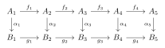
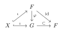
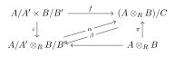
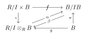

Chapter 4 Modules
Section 4.1 Modules, Homomorphisms and Exact Sequences
Note: \(R\) is a ring.
4.1.1
If \(A\) is an abelian group and \(n > 0\) an integer such that \(na = 0\) for all \(a \in A\), then \(A\) is a unitary \(\mathbb{Z}_n\)-module, with the action of \(\mathbb{Z}_n\) on \(A\) given by \(\bar{k}a = ka\), where \(k \in \mathbb{Z}\) and \(k \mapsto \bar{k} \in \mathbb{Z}_n\) under the canonical projection \(\mathbb{Z} \to \mathbb{Z}_n\).
Trivial.
4.1.2
Let \(f: A \to B\) be an \(R\)-module homomorphism.
(a) \(f\) is a monomorphism if and only if for every pair of \(R\)-module homomorphisms \(g,h: D \to A\) such that \(fg = fh\), we have \(g = h\).
(b) \(f\) is an epimorphism if and only if for every pair of \(R\)-module homomorphisms \(k,t: B \to C\) such that \(kf = tf\), we have \(k = t\).
Proof: (a) If \(f\) is a monomorphism, then for any \(g,h:D\to A\) such that \(fg=fh\), \(\forall d\in D,f(g(d))=f(h(d))\) implies \(g(d)=h(d)\), so \(g=h\).
Conversely, let \(D=\mathrm{Ker}f\) \(g\) be the inclusion map and \(h\) the zero map, then \(fg=0=fh\) implies \(g=h\) and \(\mathrm{Ker}f=0\), so \(f\) is a monomorphism.
(b) If \(f\) is an epimorphism, for any \(k,t:B\to C\) such that \(kf=tf\), \(\forall b\in B,\exists a\in A,f(a)=b\), then \(k(b)=k(f(a))=t(f(a))=t(b)\) so \(k=t\).
Conversely, let \(C=B /\mathrm{Im}f\), \(k\) be the projection and \(t\) be the zero map, then \(kf=0=tf\) implies \(k=t\) and \(\mathrm{Im}f=B\), so \(f\) is an epimorphism.
4.1.3
Let \(I\) be a left ideal of a ring \(R\) and \(A\) an \(R\)-module.
(a) If \(S\) is a nonempty subset of \(A\), then \(IS = \left\{ \sum_{i=1}^n r_i a_i \mid n \in \mathbb{N}^*; r_i \in I; a_i \in S \right\}\) is a submodule of \(A\). Note that if \(S = \{a\}\), then \(IS = Ia = \{ra \mid r \in I\}\).
(b) If \(I\) is a two-sided ideal, then \(A/IA\) is an \(R/I\)-module with the action of \(R/I\) given by \((r + I)(a + IA) = ra + IA\).
Proof: (a) Clearly \(IS\) is an additive subgroup. For any \(x\in R\) and \(\sum_{i=1}^{n}{r_{i}a_{i}}\in IS\), \(xr_{i}\in I\forall 1\leqslant i\leqslant n\), so \(x\sum_{i=1}^{n}{r_{i}a_{i}}=\sum_{i=1}^{n}{(xr_{i})a_{i}}\in IS\). Hence \(IS\) is a submodule.
(b) If \(r+I=s+I\) and \(a+IA=b+IA\), then \(r-s\in I\) and \(a-b\in IA\) implies \(ra-sb=r(a-b)+(r-s)b\in IA\). So the action is well-defined. It is easy to verify the action induces a module.
4.1.4
If \(R\) has an identity, then every unitary cyclic \(R\)-module is isomorphic to an \(R\)-module of the form \(R/J\), where \(J\) is a left ideal of \(R\).
Proof: For every cyclic unitary \(R-\)module \(A=(a)\), let \(J=\{ r\in R:ra=0 \}\), then it is easy to verify that \(J\) is a left ideal of \(R\). Consider \(\varphi:A\to R /J,ra\mapsto r+J\). Note that \(ra=sa\iff r-s\in J\iff r+J=s+J\), hence \(\varphi\) is well-defined and injective. Clearly \(\varphi\) is surjective.
Note that \(\varphi(ra+sa)=\varphi((r+s)a)=(r+s)+J=\varphi(ra)+\varphi(sa)\), and \(\varphi(rsa)=rs+J=r\varphi(sa)\), so \(\varphi\) is a \(R-\)module isomorphism.
(Or consider \(\Phi:R\to A,r\mapsto ra\) then \(A\cong R /\mathrm{Ker}\Phi\) where \(\mathrm{Ker}\Phi\) is a left ideal.)
4.1.5
If \(R\) has an identity, then a nonzero unitary \(R\)-module \(A\) is simple if its only submodules are \(0\) and \(A\).
(a) Every simple \(R\)-module is cyclic.
(b) If \(A\) is simple every \(R\)-module endomorphism is either the zero map or an isomorphism.
Proof: (a) For any nonzero element \(a\in A\), \(A\) is simple implies the submodule \((a)=A\), so \(A\) is cyclic.
(b) Suppose \(A=(a)\), then for any endomorphism \(f:A\to A\), if \(f(a)=0\) then \(f\) is the zero map. Otherwise \(f(a)\neq 0\) so \(A=(f(a))\subset\mathrm{Im}f\), hence \(f\) is surjective. Note that \(\mathrm{Ker}f\) is a submodule, and \(\mathrm{Ker}f\neq A\) since \(f\neq 0\), so \(\mathrm{Ker}f=0\) and \(f\) is an isomorphism.
4.1.6
A finitely generated \(R\)-module need not be finitely generated as an abelian group.
Proof: By Exercise2.1.10, \(\mathbb{Q}\) is not a finitely generated abelian group, but \(\mathbb{Q}=(1)\) as a \(\mathbb{Q}-\)module.
4.1.7
(a) If \(A\) and \(B\) are \(R\)-modules, then the set \(\operatorname{Hom}_R(A,B)\) of all \(R\)-module homomorphisms \(A \to B\) is an abelian group with \(f + g\) given on \(a \in A\) by \((f + g)(a) = f(a) + g(a) \in B\). The identity element is the zero map.
(b) \(\operatorname{Hom}_R(A,A)\) is a ring with identity, where multiplication is composition of functions. \(\operatorname{Hom}_R(A,A)\) is called the endomorphism ring of \(A\).
(c) \(A\) is a left \(\operatorname{Hom}_R(A,A)\)-module with \(fa\) defined to be
$$
f(a)\, \forall a \in A, f \in \operatorname{Hom}_R(A,A)
$$
Proof: (a) Note that \((f+g)(a+b)=f(a+b)+g(a+b)=(f+g)(a)+(f+g)(b)\), and \((f+g)(ra)=f(ra)+g(ra)=rf(a)+rg(a)=r(f+g)(a)\), so \(f+g\in \mathrm{Hom}_{R}(A,B)\). Clearly addition is associative and commutative, and the identity is the zero map, the inverse of \(f\) is \((-f):a\mapsto-f(a)\).
(b) By (a) \(\mathrm{Hom}_{R}(A,A)\) is an abelian group. Clearly \(\mathrm{Hom}_{R}(A,A)\) is closed under composition and composition is associative. If \(f,g,h\in \mathrm{Hom}_{R}(A,A)\), then \((f(g+h))(a)=f(g(a)+h(a))=fg(a)+fh(a)\) so \(f(g+h)=fg+fh\). Likewise \(((f+g)h)(a)=f(h(a))+g(h(a))=(fh+gh)(a)\) so \((f+g)h=fh+gh\). Hence \(\mathrm{Hom}_{R}(A,A)\) is a ring with identity \(1_{A}\).
(c) Note that \((f+g)a=(f+g)(a)=f(a)+g(a)=fa+ga\), \(f\cdot(a+b)=f(a+b)=f(a)+f(b)=fa+fb\), and \((fg)a=fg(a)=f(ga)\), so \(A\) is a left \(\mathrm{Hom}_{R}(A,A)-\)module.
4.1.8
Prove that the obvious analogues of Theorem I.8.10 and Corollary I.8.11 are valid for \(R\)-modules.
Just verify they are also module isomorphisms.
4.1.9
If \(f: A \to A\) is an \(R\)-module homomorphism such that \(ff = f\), then
$\(A = \operatorname{Ker} f \oplus \operatorname{Im} f\)$
Proof: For any \(a\in A\), \(a=f(a)+(a-f(a))\) where \(f(a)\in \mathrm{Im}f\) and \(a-f(a)\in \mathrm{Ker}f\), so \(A=\mathrm{Ker}f+\mathrm{Im}f\).
If \(a\in \mathrm{Ker}f\cap \mathrm{Im}f\), suppose \(a=f(b)\), then \(a=f(b)=f(f(b))=f(a)=0\), hence \(\mathrm{Ker}f\cap \mathrm{Im}f=0\) and \(A=\mathrm{Ker}f\oplus \mathrm{Im}f\).
4.1.10
Let \(A, A_1, \dots, A_n\) be \(R\)-modules. Then \(A \cong A_1 \oplus \cdots \oplus A_n\) if and only if for each \(i = 1, 2, \dots, n\) there is an \(R\)-module homomorphism \(\varphi_i: A \to A\) such that \(\operatorname{Im} \varphi_i \cong A_i\); \(\varphi_i \varphi_j = 0\) for \(i \neq j\); and \(\varphi_1 + \varphi_2 + \cdots + \varphi_n = 1_A\).
Proof: If \(\varphi:A\cong A_{1}\oplus\cdots\oplus A_{n}\), let \(\varphi_{i}=\varphi ^{-1}\iota_{i}\pi_{i}\varphi\), then \(\pi_{i}\iota_{j}=0\) implies \(\varphi_{i}\varphi_{j}=0\forall i\neq j\). Clearly \(\mathrm{Im}\varphi_{i}\cong \mathrm{Im}\pi_{i}=A_{i}\), and \(\sum{\varphi_{i}}=\varphi^{-1}\sum_{}^{}{\iota_{i}\pi_{i}}\varphi=\varphi ^{-1}1\varphi=1_{A}\).
Conversely, \(\varphi_{i}=1_{A}\varphi_{i}=\sum_{}^{}{\varphi_{j}\varphi_{i}}=\varphi_{i}^{2}\), so apply Theorem 4.1.14 to \(A,\mathrm{Im}\varphi_{i},\varphi_{i},\varphi_{i}|_{\mathrm{Im}\varphi _{i}}\), we have \(A\cong A_{1}\oplus\cdots\oplus A_{n}\).
4.1.11
(a) If \(A\) is a module over a commutative ring \(R\) and \(a \in A\), then \(\mathcal{O}_a = \{r \in R \mid ra = 0\}\) is an ideal of \(R\). If \(\mathcal{O}_a \neq 0\), \(a\) is said to be a torsion element of \(A\).
(b) If \(R\) is an integral domain, then the set \(T(A)\) of all torsion elements of \(A\) is a submodule of \(A\). (\(T(A)\) is called the torsion submodule.)
(c) Show that (b) may be false for a commutative ring \(R\), which is not an integral domain.
In (d)-(f) \(R\) is an integral domain.
(d) If \(f: A \to B\) is an \(R\)-module homomorphism, then \(f(T(A)) \subset T(B)\); hence the restriction \(f_T\) of \(f\) to \(T(A)\) is an \(R\)-module homomorphism \(T(A) \to T(B)\).
(e) If \(0 \to A \xrightarrow{f} B \xrightarrow{g} C\) is an exact sequence of \(R\)-modules, then so is \(0 \to T(A) \stackrel{f_T}{\to} T(B) \stackrel{g_T}{\to} T(C)\).
(f) If \(g: B \to C\) is an \(R\)-module epimorphism, then \(g_T: T(B) \to T(C)\) need not be an epimorphism.
Proof: (a) If \(r,s \in \mathcal{O}_{a}\) then \((r-s)a=ra-sa=0\) so \(r-s \in \mathcal{O}_{a}\). If \(r\in \mathcal{O}_{a}\) and \(x\in R\), then \((xr)a=x(ra)=0\) so \(xr\in \mathcal{O}_{a}\). Hence \(\mathcal{O}_{a}\) is an ideal of \(R\).
(b) If \(a,b\in T(A)\), suppose \(ra=sb=0\) for \(r,s\in R\backslash\{ 0 \}\), then \(rs(a-b)=0\) and \(rs\neq 0\) sine \(R\) is an integral domain, so \(a-b\in T(A)\).
If \(a\in T(A)\) and \(r\in R\), suppose \(sa=0\) for \(s \in R\backslash \{ 0 \}\), then \(s(ra)=r(sa)=0\) so \(ra\in T(A)\). Hence \(T(A)\) is a submodule of \(A\).
(c) For example, if \(R=\mathbb{Z}_{6}\), then \(\mathbb{Z}_{6}\) itself is an \(R-\)module, and \(O_{3}=(2),O_{2}=(3)\) so \(2,3\in T(\mathbb{Z}_{6})\), but \(1\not\in T(\mathbb{Z}_{6})\).
(d) If \(a\in T(A)\), then take \(ra=0,r\neq 0\), we have \(0=f(ra)=rf(a)\), so \(f(a)\in T(B)\) and \(f(T(A))\subset T(B)\).
(e) \(0\to A\xrightarrow{f}B\) is exact implies \(f\) is a monomorphism, hence \(f_{T}=f|_{T(A)}\) is a monomorphism, and \(0\to T(A)\stackrel{f_{T}}{\to}T(B)\) is exact.
If \(f(a)\in \mathrm{Im}f\cap T(B)\), then take \(rf(a)=0,r\neq 0\), we have \(0=rf(a)=f(ra)\) so \(ra=0\) (since \(f\) is injective). Hence \(\mathrm{Im}f_{T}=f(T(A))=\mathrm{Im}f\cap T(B)=\mathrm{Ker}g_{T}\), and the whole sequence is exact.
(f) Let \(R=\mathbb{Z}\), \(\pi:\mathbb{Z}\to \mathbb{Z}_{p}\) is an epimorphism, but \(T(\mathbb{Z})=0\) while \(T(\mathbb{Z}_{p})=\mathbb{Z}_{p}\), so \(g_{T}:0\to \mathbb{Z}_{p}\) cannot be an epimorphism.
4.1.12
(The Five Lemma). Let

be a commutative diagram of \(R\)-modules and \(R\)-module homomorphisms, with exact rows. Prove that:
(a) \(\alpha_1\) an epimorphism and \(\alpha_2, \alpha_4\) monomorphisms \(\Rightarrow \alpha_3\) is a monomorphism;
(b) \(\alpha_5\) a monomorphism and \(\alpha_2, \alpha_4\) epimorphisms \(\Rightarrow \alpha_3\) is an epimorphism.
Proof: (a) If \(\alpha_{3}(a_{3})=0\), then \(0=g_{3}\alpha_{3}(a_{3})=\alpha_{4}f_{3}(a_{3})\), so \(\alpha_{4}\) is a monomorphism implies \(a_{3}\in \mathrm{Ker}f_{3}=\mathrm{Im}f_{2}\). Suppose \(f_{2}(a_{2})=a_{3}\), then \(0=\alpha_{3}f_{2}(a_{2})=g_{2}\alpha_{2}(a_{2})\), so \(b_{2}=\alpha_{2}(a_{2})\in \mathrm{Ker}g_{2}=\mathrm{Im}g_{1}\). Take \(g(b_{1})=b_{2}\), and \(\alpha_{1}(a_{1})=b_{1}\) (since \(\alpha\) is an epimorphism), then \(\alpha_{2}(a_{2})=b_{2}=g_{1}\alpha_{1}(a_{1})=\alpha_{2}f_{1}(a_{1})\). Since \(\alpha_{2}\) is a monomorphism, \(a_{2}=f_{1}(a_{1})\in \mathrm{Im}f_{1}=\mathrm{Ker}f_{2}\), so \(a_{3}=f_{2}(a_{2})=0\). Therefore \(\alpha_{3}\) is a monomorphism.
(b) For any \(b_{3}\in B_{3}\), let \(b_{4}=g_{3}(b_{3})\) and \(\alpha_{4}(a_{4})=b_{4}\) (since \(\alpha_{4}\) is an epimorphism). Note that \(0=g_{4}g_{3}(b_{3})=g_{4}(b_{4})=g_{4}\alpha_{4}(a_{4})=\alpha_{5}f_{4}(a_{4})\), so \(\alpha_{5}\) is a monomorphism implies \(a_{4}\in \mathrm{Ker}f_{4}=\mathrm{Im}f_{3}\). Suppose \(f_{3}(a_{3})=a_{4}\), then \(g_{3}(b_{3})=b_{4}=\alpha_{4}f_{3}(a_{3})=g_{3}\alpha_{3}(a_{3})\), so \(b=b_{3}-\alpha_{3}(a_{3})\in \mathrm{Ker}g_{3}=\mathrm{Im}g_{2}\). Take \(g_{2}(b_{2})=b\) and \(\alpha_{2}(a_{2})=b_{2}\) (since \(\alpha_{2}\) is an epimorphism), then \(b=g_{2}\alpha_{2}(a_{2})=\alpha_{3}f_{2}(a_{2})\). Therefore \(b_{3}=b+\alpha_{3}(a_{3})=\alpha_{3}(a_{3}+f_{2}(a_{2}))\in \mathrm{Im}\alpha_{3}\), and \(\alpha_{3}\) is an epimorphism.
4.1.13
(a) If \(0 \to A \to B \xrightarrow{f} C \to 0\) and \(0 \to C \xrightarrow{g} D \to E \to 0\) are short exact sequences of modules, then the sequence \(\displaystyle0 \to A \to B \xrightarrow{gf} D \to E \to 0\) is exact.
(b) Show that every exact sequence may be obtained by splicing together suitable short exact sequences as in (a).
Proof: (a) The short exact sequences implies \(f\) is surjective and \(g\) is injective, so \(\mathrm{Ker}f=\mathrm{Ker}gf\) and \(\mathrm{Im}g=\mathrm{Im}gf\), hence the new sequence is still exact.
(b) If we have \(0\to A_{0}\xrightarrow{f_{0}}A_{1}\xrightarrow{f_{1}}A_{2}\xrightarrow{f_{2}}\cdots\), then let \(B=A_{1} /\mathrm{Im}f_{0}\cong \mathrm{Im}f_{1}=\mathrm{Ker}f_{2}\), we can split the exact sequence into \(\displaystyle0\to A_{0}\xrightarrow{f_{0}}A_{1}\xrightarrow{\pi}A_{1} /\mathrm{Im}f_{0}\to 0\) and \(0\to A_{1} /\mathrm{Im}f_{0}\xrightarrow{\subset}A_{2}\xrightarrow{f_{2}}\cdots\).
4.1.14
Show that isomorphism of short exact sequences is an equivalence relation.
Proof: Reflection is trivial.
If \(A\stackrel{\alpha}{\to}B\stackrel{g}{\to}B^{\prime}\) and \(A\stackrel{f}{\to}A^{\prime}\stackrel{\beta}{\to}B^{\prime}\) are commutative and \(f,g\) are isomorphisms, then \(g\alpha=\beta f\) implies \(\alpha f^{-1}=g^{-1}\beta\).
$$
\begin{CD}
A @>>\alpha>B\newline
@VfVV @VgVV\newline
A^{\prime} @>>\beta> B^{\prime}
\end{CD}\implies
\begin{CD}
A @>>\alpha>B\newline
@AAf^{-1}A @Ag^{-1}AA\newline
A^{\prime} @>>\beta> B^{\prime}
\end{CD}
$$
Hence the relation is symmetric.
$$
\begin{CD}
A @>>\alpha>B\newline
@VfVV @VgVV\newline
A^{\prime} @>>\beta> B^{\prime}\newline
@VhVV @VkVV \newline
A^{\prime\prime} @>>\Gamma>B^{\prime\prime}\newline
\end{CD}
\implies
\begin{CD}
A @>>\alpha>B\newline
@VVh\circ f V @Vk\circ gVV\newline
A^{\prime\prime} @>>\gamma> B^{\prime\prime}\newline
\end{CD}
$$
So the relation is transitive.
4.1.15
If \(f: A \to B\) and \(g: B \to A\) are \(R\)-module homomorphisms such that \(gf = 1_A\), then \(B = \operatorname{Im} f \oplus \operatorname{Ker} g\).
Proof: \(g(b-f(g(b)))=g(b)-gfg(b)=0\) implies \(B=\mathrm{Im}f+\mathrm{Ker}g\).
If \(f(a)\in \mathrm{Im}f\oplus \mathrm{Ker}g\), then \(a=gf(a)=0\) so \(\mathrm{Im}f\cap \mathrm{Ker}g=0\), and \(B=\mathrm{Im}f\oplus \mathrm{Ker}g\).
(Using the splitting lemma, the exact sequence \(0\to \mathrm{Ker}g\to B\stackrel{g}{\to}A\to{0}\) implies \(B\cong A\oplus \mathrm{Ker}g\cong\mathrm{Im}f\oplus \mathrm{Ker}g\).)
4.1.16
Let \(R\) be a ring and \(R^{op}\) its opposite ring (Exercise III.1.17). If \(A\) is a left \(R\)-module, then \(A\) is a right \(R^{op}\)-module such that \(ra = ar\) for all \(a \in A, r \in R, r \in R^{op}\).
Proof: For any \(r,s\in R^{op}\) and \(a,b\in A\), \(a(r+s)=(r+s)a=ra+sa=ar+as\), \((a+b)r=r(a+b)=ra+rb=ar+br\), and \((ar)s=s(ra)=(r\circ s)a=a(r\circ s)\), hence \(A\) is a right \(R^{op}-\)module.
4.1.17
(a) If \(R\) has an identity and \(A\) is an \(R\)-module, then there are submodules \(B\) and \(C\) of \(A\) such that \(B\) is unitary, \(RC = 0\) and \(A = B \oplus C\).
(b) Let \(A_1\) be another \(R\)-module, with \(A_1 = B_1 \oplus C_1\) (\(B_1\) unitary, \(RC_1 = 0\)). If \(f: A \to A_1\) is an \(R\)-module homomorphism then \(f(B) \subset B_1\) and \(f(C) \subset C_1\).
(c) If the map \(f\) of part (b) is an epimorphism, then so are \(f \mid B: B \to B_1\) and \(f \mid C: C \to C_1\).
Proof: (a) Let \(B = \{1_R a \mid a \in A\}\) and \(C = \{a \in A \mid 1_R a = 0\}\). Note that for all \(a \in A\), \(a - 1_R a \in C\), so \(A=B+C\). Clearly \(RC=R 1_{R}C=0\), and if \(1_{R}a\in B\cap C\), then \(1_{R}a=1_{R}(1_{R}a)=0\) so \(B\cap C=0\). Hence \(A=B\oplus C\).
(b) If \(b\in B\), then \(f(b)=f(1_{R}b)=1_{R}f(b)\) so \(f(b)\in B_{1}\).
If \(c\in C\), \(0=f(1_{R}c)=1_{R}f(c)\) so \(f(c)\in C_{1}\).
(c) If \(b_{1}\in B_{1}\), take \(r\in R\) such that \(f(r)=b_{1}\), then \(f(1_{R}r)=1_{R}f(r)=1_{R}b_{1}=b_{1}\) where \(1_{R}r\in B\), so \(b_{1}\in f(B)\) and \(f|_{B}\) is an epimorphism.
If \(c_{1}\in C_{1}\), take \(r\in R\) such that \(f(r)=c_{1}\), then \(0=1_{R}c_{1}=1_{R}f(r)=f(1_{R}r)\), so \(1_{R}r\in \mathrm{Ker}f\) and \(f(r-1_{R}r)=c_{1}\) where \(r-1_{R}r\in C\). Hence \(c_{1}\in f(C)\) and \(f|_{C}\) is an epimorphism.
4.1.18
Let \(R\) be a ring without identity. Embed \(R\) in a ring \(S\) with identity and characteristic zero as in the proof of Theorem III.1.10. Identify \(R\) with its image in \(S\).
(a) Show that every element of \(S\) may be uniquely expressed in the form \(r1_S + n1_S\) (\(r \in R, n \in \mathbb{Z}\)).
(b) If \(A\) is an \(R\)-module and \(a \in A\), show that there is a unique \(R\)-module homomorphism \(f: S \to A\) such that \(f(1_S) = a\).
Proof: (a) Recall that \(S=\{ (r,n):r\in R,n\in \mathbb{Z} \}\), and \(1_{S}=(0,1)\), so every element \((r,n)\in S\) can be uniquely expressed as \(r 1_{S}+n 1_{S}\).
(b) Define \(f:S\to A\) as \(f(r 1_{S}+n 1_{S})=ra+na\), then \(f\) is well defined. Clearly \(f(1_{S})=a\), \(f((r,n)+(s,m))=(r+s)a+(n+m)a=f((r,n))+f((s,m))\), and \(f(x(r,n))=(rx+nx)a=xf((r,n))\). Therefore \(f\) is a module homomorphism. Note that \(S\) is a module generated by \(1_{S}\), so \(f\) is unique.
Section 4.2 Free Modules and Vector Spaces
4.2.1
(a) A set of vectors \(\{ x_1, \dots, x_n \}\) in a vector space \(V\) over a division ring \(R\) is linearly dependent if and only if some \(x_k\) is a linear combination of the preceding \(x_i\).
(b) If \(\{ x_1, x_2, x_3 \}\) is a linearly independent subset of \(V\), then the set \(\{ x_1 + x_2, x_2 + x_3, x_3 + x_1 \}\) is linearly independent if and only if \(\mathrm{Char}\,R \neq 2\).
Proof: (a) The “if” part is trivial. If \(x_{i}\) are linearly dependent, then \(\sum_{k=1}^{n}{r_{k}x_k}=0\) for some \(r_{k}\in R\) not all zero. Suppose \(j\) is the largest index such that \(r_{j}\neq 0\), then \(x_{j}=\sum_{k<j}^{}{(-r_{j}^{-1}r_{k})}x_{k}\) is a linear combination of the preceding \(x_{k}\).
(b) If \(\mathrm{Char}\,R\neq 2\), then \(a(x_{1}+x_{2})+b(x_{2}+x_{3})+c(x_{3}+x_{1})=0\) implies \((a+c)x_{1}+(b+a)x_{2}+(c+b)x_{3}=0\), so \(a+c=b+a=c+b=0\). Hence \(2(a+b+c)=0\), and \(\mathrm{Char}\,R\neq 2\) implies \(a+b+c=0\), so \(a=b=c=0\). Therefore \(\{ x_{1}+x_{2},x_{2}+x_{3},x_{3}+x_{1} \}\) is linearly independent.
If \(\mathrm{Char}\,R=2\), then \(1_{R}(x_{1}+x_{2})+1_{R}(x_{2}+x_{3})+1_R(x_{3}+x_{1})=0\) so they are not linearly independent.
4.2.2
Let \(R\) be any ring (possibly without identity) and \(X\) a nonempty set. In this exercise an \(R\)-module \(F\) is called a free module on X if \(F\) is a free object on \(X\) in the category of all left \(R\)-modules. Thus by Definition I.7.7, \(F\) is the free module on \(X\) if there is a function \(\iota : X \to F\) such that for any left \(R\)-module \(A\) and function \(f : X \to A\) there is a unique \(R\)-module homomorphism \(\bar{f} : F \to A\) with \(\bar{f}\iota = f\).
(a) Let \(\{ X_i \mid i \in I \}\) be a collection of mutually disjoint sets and for each \(i \in I\), suppose \(F_i\) is a free module on \(X_i\), with \(\iota_i : X_i \to F_i\). Let \(X = \bigcup_{i \in I} X_i\) and \(F = \sum_{i \in I} F_i\), with \(\phi_i : F_i \to F\) the canonical injection. Define \(\iota : X \to F\) by \(\iota(x) = \phi_i \iota_i(x)\) for \(x \in X_i\); (\(\iota\) is well defined since the \(X_i\) are disjoint). Prove that \(F\) is a free module on \(X\).
(b) Assume \(R\) has an identity. Let the abelian group \(\mathbb{Z}\) be given the trivial \(R\)-module structure (\(rm = 0\) for all \(r \in R, m \in \mathbb{Z}\)), so that \(R \oplus \mathbb{Z}\) is an \(R\)-module with \(r(r', m) = (rr', 0)\) for all \(r, r' \in R, m \in \mathbb{Z}\). If \(X\) is any one element set, \(X = \{ t \}\), let \(\iota : X \to R \oplus \mathbb{Z}\) be given by \(\iota(t) = (1_R, 1)\). Prove that \(R \oplus \mathbb{Z}\) is a free module on \(X\).
(c) If \(R\) is an arbitrary ring and \(X\) is any set, then there exists a free module on \(X\).
Proof: (a) For any left \(R-\)module e\(A\) and function \(f:X\to A\), let \(f_{i}=f|_{X_{i}}\). Since \(F_{i}\) is free on \(X_{i}\), there is a unique \(R-\)module homomorphism \(\bar{f}_{i}:F_{i}\to A\) such that \(\bar{f}_{i}\iota_{i}=f_{i}\). Since \(F\) is the coproduct of \(F_{i}\), there is a unique \(R-\)module homomorphism \(\bar{f}:F\to A\) such that \(\bar{f}\phi_{i}=\bar{f}_{i}\). Then \(\bar{f}\phi_{i}\iota_{i}=\bar{f}_{i}\iota_{i}=f_{i}=f|_{X_{i}}\) for all \(i\in I\), so \(\bar{f}\iota=f\).
If \(g\iota=f\) for some \(R-\)module homomorphism \(g:F\to A\), then \(f|_{X_{i}}=g\iota|_{X_{i}}=g\phi_{i}\iota _i\). By uniqueness we have \(g\phi_{i}=\bar{f}_{i}\) and \(g=\bar{f}\). Hence \(F\) is free on \(X\).
(b) Given \(f:X\to A\), let \(b=1_{R}f(t)\) and \(c=f(t)-b\), then \(1_{R}b=b\) and \(1_{R}c=0\).
Define \(\bar{f}:R\oplus \mathbb{Z}\to A,(r,m)\mapsto rb+mc\), then clearly \(\bar{f}\) is a homomorphism of groups. For \((r,m)\in R\oplus \mathbb{Z}\) and \(s \in R\), \(\bar{f}(s(r,m))=\bar{f}(( s r,0))=s\bar{f}(r,m)\). Hence \(\bar{f}\) is a \(R-\)module homomorphisms, and clearly \(\bar{f}(1_{R},1)=f(t)\). Therefore \(R\oplus \mathbb{Z}\) is free on \(X=\{ t \}\).
(c) By (a) we can assume \(X=\{ t \}\) has only one element. If \(R\) has an identity, use (b); if \(R\) has no identity, by Exercise4.1.18 \(R\) can be embedded in a ring \(S\) with identity and characteristic zero, and \(S\) is free on \(X=\{ t \}\).
4.2.3
Let \(R\) be any ring (possibly without identity) and \(F\) a free \(R\)-module on the set \(X\), with \(\iota : X \to F\), as in Exercise 2. Show that \(\iota(X)\) is a set of generators of the \(R\)-module \(F\).
Proof:

Let \(G\) be the submodule generated by \(\iota(X)\). Since \(F\) is free on \(X\), there is a \(R\)-module homomorphism \(\varphi:F\to G\) such that \(\varphi\iota=\iota\). Consider the embedding \(X\stackrel{\iota}{\to}G\stackrel{\subset}{\to}F\), then by uniqueness \(F\stackrel{\varphi}{\to}G\stackrel{\subset}{\to}F\) is the identity. Hence \(G=F\).
4.2.4
Let \(R\) be a principal ideal domain, \(A\) a unitary left \(R\)-module, and \(p \in R\) a prime (\(=\) irreducible). Let \(pA = \{ pa \mid a \in A \}\) and \(A[p] = \{ a \in A \mid pa = 0 \}\).
(a) \(R/(p)\) is a field (Theorems III.2.20 and III.3.4).
(b) \(pA\) and \(A[p]\) are submodules of \(A\).
(c) \(A/pA\) is a vector space over \(R/(p)\), with \((r + (p))(a + pA) = ra + pA\).
(d) \(A[p]\) is a vector space over \(R/(p)\), with \((r + (p))a = ra\).
Proof: (a) Since \((p)\) is maximal and \(R\) commutative, \(R /(p)\) is a field.
(b) Clearly they are subgroups. If \(pa\in pA\) and \(r\in R\), then \(rpa=p(ra)\in pA\). If \(pa=0\) for \(a\in A\), and \(r\in R\) ,then \(p(ra)=r(pa)=0\) so \(ra\in A\). Hence \(pA\) and \(A[p]\) are submodules.
(c) If \(r+(p)=s+(p)\) and \(a+pA=b+pA\) then \(ra-sb=r(a-b)+(r-s)b\in pA\), so the action is well-defined. It is easy to verify the action induces a module.
(d) If \(r+(p)=s+(p)\) then \(r-s=tp\) for some \(t\in R\) so \(ra-sa=(r-s)a=tpa=0\), hence the actions is well-defined. It is easy to verify the action induces a module.
4.2.5
Let \(V\) be a vector space over a division ring \(D\) and \(S\) the set of all subspaces of \(V\), partially ordered by set theoretic inclusion.
(a) \(S\) is a complete lattice.
(b) \(S\) is a complemented lattice; that is, for each \(V_1 \in S\) there exists \(V_2 \in S\) such that \(V = V_1 + V_2\) and \(V_1 \cap V_2 = 0\), so that \(V = V_1 \oplus V_2\).
(c) \(S\) is a modular lattice; that is, if \(V_1, V_2, V_3 \in S\) and \(V_3 \subset V_1\), then
$\(V_1 \cap (V_2 + V_3) = (V_1 \cap V_2) + V_3.\)$
Proof: (a) The g.l.b. of \(\{ V_{\alpha}:\alpha \in J \}\) is clearly \(\bigcap_{\alpha \in J}V_{\alpha}\) since it is the set theoretic g.l.b. The l.u.b. of \(\{ V_{\alpha} \}\) is the module generated by \(\bigcup_{\alpha \in J}V_{\alpha}\) which is \(\sum_{\alpha \in J}^{}{V_{\alpha}}\).
(b) Let \(\mathcal{A}=\{ U\in S:U\cap V_{1}=0 \}\), then every chain \(\{ U_{\alpha}:\alpha \in J \}\) in \(\mathcal{A}\) has an upper bound \(\bigcup_{\alpha \in J}U_{\alpha}\). Hence by Zorn’s lemma \(\mathcal{A}\) has a maximal element \(V_{2}\). If \(V\neq V_{1}+V_{2}\), take \(v\in V\backslash(V_{1}+V_{2})\), and consider \(U=(v)+V_{2}\). If \(v_{1}=rv+v_{2}\in V_{1}\cap((v)+V_{2})\), then \(v_{1}\neq v_{2}\) so \(r\neq 0\). Hence \(v=r_{1}^{-1}(v_{1}-v_{2})\in V_{1}+V_{2}\), leading to contradiction. Hence \(U\in \mathcal{A}\), contradicting maximality of \(V_{2}\). Therefore \(V=V_{1}\oplus V_{2}\).
(c) Note that \((V_{1}\cap V_{2})+V_{3}=(V_{1}\cap V_{2})+(V_{1}\cap V_{3})\subset V_{1}\cap(V_{2}+V_{3})\). If \(v=v_{2}+v_{3}\in V_{1}\cap(V_{2}+V_{3})\), where \(v_{2}\in V_{2}\) and \(v_{3}\in V_{3}\), then \(v_{2}=v-v_{3}\in V_{1}\) so \(v_{2}\in V_{1}\cap V_{2}\). Hence \(v=v_{2}+v_{3}\in(V_{1}\cap V_{2})+V_{3}\). Therefore
$$
V_{1}\cap(V_{2}+V_{3})=(V_{1}\cap V_{2})+V_{3}.
$$
4.2.6
Let \(\mathbb{R}\) and \(\mathbb{C}\) be the fields of real and complex numbers respectively.
(a) \(\dim_{\mathbb{R}}\mathbb{C} = 2\) and \(\dim_{\mathbb{R}}\mathbb{R} = 1\).
(b) There is no field \(K\) such that \(\mathbb{R} \subset K \subset \mathbb{C}\).
Proof: (a) \(\mathbb{C},\mathbb{R}\) are unitary \(\mathbb{R}-\)modules, and \(\mathbb{C}\) has a basis \(\{ 1,i \}\), \(\mathbb{R}\) has a basis \(\{ 1 \}\).
(b) If \(\mathbb{R}\subsetneq K\subsetneq \mathbb{C}\), then by Theorem4.2.16, \(2=\mathrm{dim}_{\mathbb{R}}\mathbb{C}=(\mathrm{dim}_{K}\mathbb{C})(\mathrm{dim}_{\mathbb{R}}K)\) so either \(\mathrm{dim}_{K}\mathbb{C}=1\) or \(\mathrm{dim}_{\mathbb{R}}K=1\), leading to contradiction.
4.2.7
If \(G\) is a nontrivial group that is not cyclic of order 2, then \(G\) has a nonidentity automorphism.
Proof: If \(G\) is non-abelian, then \(\tau_{g}:h\mapsto hgh^{-1}\) is a non-identity automorphism for some \(g\in G\).
If \(G\) is abelian and not every element has order \(1,2\), then \(x\mapsto-x\) is a non-identity automorphism.
Otherwise, \(G[2]=G\) is a vector space over \(\mathbb{Z}_{2}\) by Exercise4.2.4(d). Suppose \(G\cong \mathbb{Z}_{2}^{X}=\mathbb{Z}_{2}\oplus \mathbb{Z}_{2}\oplus F\) where \(n\geqslant 2\), then \(\sigma:(x_{1},x_{2},a)\mapsto(x_{2},x_{1},a)\) is a non-identity automorphism.
4.2.8
If \(V\) is a finite dimensional vector space and \(V^m\) is the vector space
$\(V \oplus V \oplus \cdots \oplus V \quad (m \text{ summands}),\)$
then for each \(m \geqslant 1\), \(V^m\) is finite dimensional and \(\dim V^m = m(\dim V)\).
Proof: Suppose \(X\) is a basis of \(V\), then \(Y=\{ \iota_{i}(x):1\leqslant i\leqslant m,x\in X \}\) is a basis of \(V^{m}\), so \(\mathrm{dim}V^{m}=\lvert Y \rvert=m\lvert X \rvert=m\mathrm{dim}V\).
4.2.9
If \(F_1\) and \(F_2\) are free modules over a ring with the invariant dimension property, then rank \((F_1 \oplus F_2) =\) rank \(F_1 +\) rank \(F_2\).
Proof: Trivial since \(\mathrm{rank} \,F\) is the number of summands of \(R\) that \(F\) contains.
4.2.10
Let \(R\) be a ring with no zero divisors such that for all \(r, s \in R\) there exist \(a, b \in R\), not both zero, with \(ar + bs = 0\).
(a) If \(R = K \oplus L\) (module direct sum), then \(K = 0\) or \(L = 0\).
(b) If \(R\) has an identity, then \(R\) has the invariant dimension property.
Proof: (a) Otherwise take \(k\in K\backslash\{ 0 \}\) and \(l\in L\backslash\{ 0 \}\). There exist \(a,b\in R\) such that \(a(k,0)+b(0,l)=0\), then \(ak=-bl\in K\cap L=0\) so \(a=b=0\), a contradiction.
(b) If \(A\) is a \(R-\)module and \(A\) has finite dimensions \(n>m\), then \(R^{n}\cong A\cong R^{m}\). We prove by induction on \(n\) that every set of \(n+1\) elements in \(R^{n}\) is linearly dependent. The base \(n=1\) is trivial.
If it holds for \(n-1\), consider any set of \(n+1\) elements \(v_{1},\cdots,v_{n+1}\in R^{n}\). Consider the projection onto the first coordinate \(\pi:R^{n}\to R\), and let \(x_{i}=\pi(v_{i})\). If \(x_{i}=0\forall 1\leqslant i\leqslant n+1\), then \(v_{1},\cdots,v_{n+1}\in R^{n-1}\) so by hypothesis they are linearly dependent.
Otherwise suppose \(x_{1}\neq 0\), and take \(a_{i},b_{i}\in R\) such that \(a_{i}x_{1}+b_{i}x_{i}=0\). Note that \(b_{i}\neq 0\) since \(R\) has no divisors. Let \(u_{i}=a_{i}v_{1}+b_{i}v_{i}\), then \(\pi(u_{i})=a_{i}\pi(v_{1})+b_{i}\pi(v_{i})=0\) so we can view \(u_{2},\cdots,u_{n+1}\) as elements of \(R^{n-1}\). By hypothesis they are linearly dependent, so \(\sum_{i=2}^{n+1}{c_{i}u_{i}}=0\) where \(c_{i}\) are not all zero. Hence
$$
0=\sum_{i=2}^{n+1}{c_{i}u_{i}}=\sum_{i=2}^{n+1}{c_{i}(a_{i}v_{1}+b_{i}v_{i})}=\sum_{i=2}^{n+1}{c_{i}a_{i}} v_{1}+\sum_{i=2}^{n+1}{c_{i}b_{i}v_{i}}
$$
where \(c_{i}b_{i}\) are not all zero. Therefore they are linearly dependent.
4.2.11
Let \(F\) be a free module of infinite rank \(\alpha\) over a ring \(R\) that has the invariant dimension property. For each cardinal \(\beta\) such that \(0 \leqslant \beta \leqslant \alpha\), \(F\) has infinitely many proper free submodules of rank \(\beta\).
Proof: Suppose \(\varphi:F\cong R^{X}\) where \(\lvert X \rvert=\alpha\). For each cardinal \(0\leqslant \beta\leqslant \alpha\), there are infinitely many proper subsets of \(X\) with cardinality \(\beta\): If \(\beta\) is finite it is trivial. Otherwise by Zorn’s lemma there is a subset \(Y\subset X\) with cardinal \(\beta\), then we can remove finitely many elements from \(Y\).
If \(\lvert Y \rvert=\beta\), then \(\varphi ^{-1}(R^{Y}\oplus 0^{X\backslash Y})\) is a submodule of \(F\) with rank \(\beta\).
4.2.12
If \(F\) is a free module over a ring with identity such that \(F\) has a basis of finite cardinality \(n \geqslant 1\) and another basis of cardinality \(n + 1\), then \(F\) has a basis of cardinality \(m\) for every \(m \geqslant n\) (\(m \in \mathbb{N}^*\)).
Proof: If \(R^{n}\cong R^{n+1}\), then for all \(m\geqslant m\), \(R^{m}=R^{m-n}\oplus R^{n}\cong R^{m-n}\oplus R^{n+1}=R^{m+1}\). Hence \(R^{n}\cong R^{m}\) for all \(m\geqslant n\).
4.2.13
Let \(K\) be a ring with identity and \(F\) a free \(K\)-module with an infinite denumerable basis \(\{ e_1, e_2, \dots \}\). Then \(R = \text{Hom}_K(F, F)\) is a ring by Exercise 1.7(b). If \(n\) is any positive integer, then the free left \(R\)-module \(R\) has a basis of \(n\) elements; that is, as an \(R\)-module, \(R \cong R \oplus \cdots \oplus R\) for any finite number of summands.
Proof: By exercise4.2.12 we only need to show \(R\cong R\oplus R\):
\(\{ 1_{R} \}\) is a basis of one element. Consider \(f_{1}\in \mathrm{Hom}_{K}(F,F)\), \(f_{1}(e_{2k})=e_{k},f_{1}(e_{2k-1})=0\) and \(f_{2}\in \mathrm{Hom}_{K}(F,F)\), \(f_{2}(e_{2k})=0,f_{2}(e_{2k-1})=e_{k}\). Then for all \(g\in R\), \(g=g_{1}f_{1}+g_{2}f_{2}\) where \(g_{1}(e_{k})=g(e_{2k})\) and \(g_{2}(e_{k})=g(e_{2k-1})\). If \(g_{1}f_{1}+g_{2}f_{2}=0\) then consulting values at \(e_{2k}\) and \(e_{2k-1}\) we obtain \(g_{1}(e_{k})=g_{2}(e_{k})=0\) for all \(k\geqslant 1\). Hence \(g_{1}=g_{2}=0\) and \(f_{1},f_{2}\) are linearly independent.
4.2.14
Let \(f : V \to V'\) be a linear transformation of finite dimensional vector spaces \(V\) and \(V'\) such that \(\dim V = \dim V'\). Then the following conditions are equivalent: (i) \(f\) is an isomorphism; (ii) \(f\) is an epimorphism; (iii) \(f\) is a monomorphism.
Proof: \((ii)\iff \mathrm{Im}f=V^{\prime}\iff \mathrm{dim}\mathrm{Im}f=\mathrm{dim}V^{\prime}=\mathrm{dim}V\iff \mathrm{dim}\mathrm{Ker}f=0\iff(iii)\).
4.2.15
Let \(R\) be a ring with identity. Show that \(R\) is not a free module on any set in the category of all \(R\)-modules (as defined in Exercise 2).
Proof: Consider the \(R-\)module \(\mathbb{Z}\) with trivial structure \(ra=0\forall r\in R,a\in \mathbb{Z}\). If \(f:R\to \mathbb{Z}\) is a \(R-\)module homomorphism, then \(f(r)=f(1_{R}r)=1_{R}f(r)=0\) for all \(r\in R\). Hence \(\mathrm{Hom}_{R}(R,\mathbb{Z})=0\) so \(R\) is not free on any set.
Section 4.3 Projective and Injective Modules
Note: \(R\) is a ring. If \(R\) has an identity, all \(R\)-modules are assumed to be unitary.
4.3.1
The following conditions on a ring \(R\) (with identity) are equivalent:
(a) Every (unitary) \(R\)-module is projective.
(b) Every short exact sequence of (unitary) \(R\)-modules is split exact.
(c) Every (unitary) \(R\)-module is injective.
Combine Theorem4.3.13 and Theorem4.3.4.
4.3.2
Let \(R\) be a ring with identity. An \(R\)-module \(A\) is injective if and only if for every left ideal \(L\) of \(R\) and \(R\)-module homomorphism \(g: L \to A\), there exists \(a \in A\) such that \(g(r) = ra\) for every \(r \in L\).
Proof: Use Lemma4.3.8. If there exists a module homomorphism \(\bar{g}:R\to A\) such that \(\bar{g}|_{L}=g\), then let \(a=g(1_{R})\) we have \(g(r)=\bar{g}(r 1_{R})=r\bar{g}(1_{R})=ra\). If \(g(r)=ra\) then we can define \(\bar{g}:R\to A\) as \(r\mapsto ra\), then it is a module homomorphism.
4.3.3
Every vector space over a division ring \(D\) is both a projective and an injective \(D\)-module.
Proof: Every vector space is a free module, so it is projective. (Theorem4.3.4). By Exercise4.3.1 every vector space is also injective.
4.3.4
(a) For each prime \(p\), \(Z(p^\infty)\) is a divisible group.
(b) No nonzero finite abelian group is divisible.
(c) No nonzero free abelian group is divisible.
(d) \(\mathbb{Q}\) is a divisible abelian group.
Proof: (a) For any \(n\in \mathbb{Z}\backslash\{ 0 \}\) and \(t /p^{k}\in \mathbb{Z}(p^{\infty})\), suppose \(n=p^{\alpha}m\) where \(\gcd(m,p)=1\). Take \(m^{\prime}\) such that \(m^{\prime}m\equiv 1\pmod{p^{\alpha+k}}\), then \(n\cdot \frac{tm^{\prime}}{p^{\alpha+k}}=\frac{t}{p^{k}}\) so \(\mathbb{Z}(p^{\infty})\) is divisible.
(b) If \(G\) is finite and divisible, let \(n=\lvert G \rvert\). Consider \(\varphi:x\mapsto nx\) then \(\varphi\) is surjective since \(G\) is divisible, but \(\mathrm{Im}\varphi=0\), a contradiction.
(c) If \(F\) is a free abelian group and \(F\) is divisible, then \(F\) is injective so each of its summands are injective. However \(\mathbb{Z}\) is not divisible, a contradiction.
(d) For any \(n\in \mathbb{Z}\backslash\{ 0 \}\) and \(q\in \mathbb{Q}\), \(n\cdot \frac{q}{n}=q\) so \(\mathbb{Q}\) is divisible.
4.3.5
\(\mathbb{Q}\) is not a projective \(\mathbb{Z}\)-module.
Proof: Otherwise if \(\mathbb{Q}\) is a projective \(\mathbb{Z}-\)module, by Theorem4.3.4 \(\mathbb{Q}\) can be embedded in a free \(\mathbb{Z}-\)module \(F\). Take \(1\in \mathbb{Q}\), then for any \(n\in \mathbb{N}\), there exists \(\frac{1}{n}\in \mathbb{Q}\subset F\) such that \(n \frac{1}{n}=1\). However, such elements do not exist in free \(\mathbb{Z}-\)modules: If \(a=\sum_{}^{}{x_{i}e_{i}}\in \mathbb{Z}^{X}\), take \(x_{i}\neq 0\) and an integer \(n>\lvert x_{i} \rvert\), then there are no \(b\in \mathbb{Z}^{X}\) such that \(nb=a\).
4.3.6
If \(G\) is an abelian group, then \(G = D \oplus N\), with \(D\) divisible and \(N\) reduced (meaning that \(N\) has no nontrivial divisible subgroups).
Proof: Let \(\mathcal{A}\) be the set of all divisible of \(G\), then \(0\in \mathcal{A}\) so \(\mathcal{A}\) is non-empty. If \(\{ H_{\alpha}:\alpha \in I \}\) is a chain in \(\mathcal{A}\), then \(\bigcup_{\alpha \in I}H_{\alpha}\in \mathcal{A}\) is an upper bound of the chain. Hence by Zorn’s lemma \(\mathcal{A}\) has a maximal element \(D\). Since \(D\) is divisible, \(D\) is an injective \(\mathbb{Z}-\)module, so the short exact sequence \(0\to D\stackrel{\subset}{\to}G\stackrel{\pi}{\to}G /D\to 0\) is split exact, i.e. \(G\cong D\oplus G /D\).
We show that \(G /D\) is reduced: otherwise suppose \(N /D\) is a non-trivial divisible subgroup. Then likewise \(N\cong D\oplus N/D\) where \(D,N/D\) are divisible groups, so \(N\) is also a divisible group, contradicting maximality of \(D\).
4.3.7
Without using Lemma 3.9 prove that:
(a) Every homomorphic image of a divisible abelian group is divisible.
(b) Every direct summand (Exercise I.8.12) of a divisible abelian group is divisible.
(c) A direct sum of divisible abelian groups is divisible.
Proof: (a) If \(f:G\to H\) is a group epimorphism and \(G\) is divisible, for any \(h\in H\) and \(n\in \mathbb{Z}\backslash \{ 0 \}\), there exists \(g_{1}\in G\) such that \(f(g_{1})=h\), and \(g_{2}\in G\) such that \(ng_{2}=g_{1}\). Hence \(nf(g_{2})=f(ng_{2})=f(g_{1})=h\), so \(H\) is also divisible.
(b) If \(G=H\oplus K\) where \(G\) is a divisible group, for any \(h\in H\) and \(n\in \mathbb{Z}\backslash \{ 0 \}\), there exists \((a,b)\in G\) such that \(n(a,b)=(h,0)\). Hence \(na=h\) and \(H\) is divisible.
(c) If \(G_{\alpha},\alpha \in I\) are divisible abelian groups, then for any \(\sum_{}^{}{x_{\alpha}}\in \sum_{\alpha \in I}^{}{G_{\alpha}}\) and \(n\in \mathbb{Z}\backslash\{ 0 \}\), there exist \(y_{\alpha}\in G_{\alpha}\) such that \(ny_{\alpha}=x_{\alpha}\), so \(n\sum_{}^{}{y_{\alpha}}=\sum_{}^{}{x_{\alpha}}\), and \(\sum_{\alpha \in I}^{}{G_{\alpha}}\) is divisible.
4.3.8
Every torsion-free divisible abelian group \(D\) is a direct sum of copies of the rationals \(\mathbb{Q}\).
Proof: We show that \(D\) is a vector space over \(\mathbb{Q}\), then \(D\) is the direct sum of \(\mathbb{Q}\): for \(m /n\in \mathbb{Q}\) and \(a\in D\), define the action on \(D\) as \((m /n)a=mb\) where \(b\in D\) satisfy \(nb=a\). We show that the action is well-defined: If \(m /n=p /q\in \mathbb{Q}\), and \(nb=qc=a\), then \((np)(mb)=pma=(mq)(pc)\) where \(np=mq\). Since \(D\) is torsion-free, we have \(mb=pc\) it is well-defined. It is easy to verify that the action induces a vector space over \(\mathbb{Q}\).
4.3.9
(a) If \(D\) is an abelian group with torsion subgroup \(D_t\), then \(D/D_t\) is torsion free.
(b) If \(D\) is divisible, then so is \(D_t\), whence \(D = D_t \oplus E\), with \(E\) torsion free.
Proof: (a) If \(a+D_{t}\) has finite order \(n\), then \(na\in D_{t}\) so it has finite order \(m\). Hence \(a\) has finite order \(nm\) so \(a\in D_{t}\). Therefore \(D /D_{t}\) is torsion free.
(b) If \(a\in D_{t}\) and \(n\in \mathbb{Z}\backslash \{ 0 \}\), there exists \(b\in D\) such that \(nb=a\). Suppose \(a\) has finite order \(m\), then \(mnb=ma=0\) so \(b\in D_{t}\). Hence \(D_{t}\) is divisible, and \(D_{t}\subset D\) implies \(D_{t}\) is a direct summand of \(D\). Let \(D=D_{t}\oplus E\) then \(E\cong D /D_{t}\) is torsion free.
4.3.10
Let \(p\) be a prime and \(D\) a divisible abelian \(p\)-group. Then \(D\) is a direct sum of copies of \(Z(p^\infty)\).
Proof: By Exercise4.2.4 \(D[p]\) is a vector space over \(\mathbb{Z} /(p)=\mathbb{Z}_{p}\). Let \(X\) be a basis of \(D[p]\). For any \(x\in X\), there exists \(x_{1},x_{2},\cdots \in D\) such that \(x_{1}=x,\lvert x_{1} \rvert=p\), \(px_{2}=x_{1},px_{3}=x_{2},\cdots\). Let \(H_{x}\) be the subgroup generated by \(\{ x_{i} \}\), then \(H_{x}\cong \mathbb{Z}(p^{\infty})\) by Exercise1.3.7.
Since \(X\) is linearly independent in \(\mathbb{Z}_{p}\), \(H_{x}\cap \sum_{y\neq x}^{}{H_{y}}=0\).
We prove by induction on \(k\) that any \(a\in D\) of order \(p^{k}\) is a linear combination of elements of \(H_{x}\): If \(k=1\) then \(a\in D[p]\) so it is trivial. If it holds for \(k-1\), then \(pa=\sum_{i=1}^{n}{c_{i}y_{i}}\) for \(c_{i}\in \mathbb{Z}\) and \(y_{i}\in H_{x_{i}}\). Take \(z_{i}\in H_{x_{i}}\) such that \(pz_{i}=y_{i}\), then \(b=\sum_{i=1}^{n}{c_{i}z_{i}}\) satisfy \(p(a-b)=0\). Hence \(a-b\in D[p]=(X)\) so \(a-b\) and \(b\) are both linear combinations of \(\bigcup H_{x}\). Therefore \(D\cong \sum_{x\in X}^{}{H_{x}}\).
4.3.11
Every divisible abelian group is a direct sum of copies of the rationals \(\mathbb{Q}\) and copies of \(Z(p^\infty)\) for various primes \(p\).
Proof: If \(D\) is a divisible abelian group, then by Exercise9, \(D=D_{t}\oplus E\) where \(E\) is torsion free. By Exercise7, \(E\) is a direct sum of copies of \(\mathbb{Q}\). \(D_{t}=\sum_{p}^{}{D_{t}(p)}\) and by Exercise10, \(D_{t}(p)\) is a direct sum of copies of \(\mathbb{Z}(p^{\infty})\).
4.3.12
Let \(G, H, K\) be divisible abelian groups.
(a) If \(G \oplus G \cong H \oplus H\), then \(G \cong H\).
(b) If \(G \oplus H \cong G \oplus K\), then \(H \cong K\).
Proof: (a) Use Exercise11.
(b) is false: Let \(G=\mathbb{Q}^{\mathbb{N}},H=\mathbb{Q},K=\mathbb{Q}^{2}\), then \(G\oplus H\cong G\oplus K\) but \(H,K\) are not isomorphic. The application of Exercise2.2.11 needs \(G\) to be finitely generated.
4.3.13
If one attempted to dualize the notion of free module over a ring \(R\) (and called the object so defined "co-free") the definition would read: An \(R\)-module \(F\) is co-free on a set \(X\) if there exists a function \(\iota : F \to X\) such that for any \(R\)-module \(A\) and function \(f : A \to X\), there exists a unique module homomorphism \(\bar{f} : A \to F\) such that \(\iota\bar{f} = f\) (see Theorem 2.1(iv)). Show that for any set \(X\) with \(|X| \ge 2\) no such \(R\)-module \(F\) exists. If \(|X| = 1\), then 0 is the only co-free module.
Proof: If such \(F\) exists and \(\lvert X \rvert\geqslant 2\), then take \(f:A\to X\) such that \(f(0)\neq \iota(0)\), then any homomorphism \(\bar{f}:R\to F\) satisfy \(\bar{f}(0)=0\) so \(\iota \bar{f}(0)=\iota(0)\neq f(0)\), a contradiction.
If \(\lvert X \rvert=1\) and \(F\) is a nonzero co-free module, then \(f\) and \(\iota\) are both constant maps, so \(\bar{f}\) is not unique.
4.3.14
If \(D\) is a ring with identity such that every unitary \(D\)-module is free, then \(D\) is a division ring.
Proof: By Exercise1, the condition implies every unitary \(D-\)module is injective. By Exercise3.2.7 it suffices to show that \(D\) has no maximal proper left ideals. Otherwise if \(M\) is a maximal proper left ideal, it is a \(D-\)module, hence an injective \(D-\)module. By Proposition4.3.13 it is a (module) direct summand of \(D\). Let \(D=M\oplus K\), then \(M\) is maximal implies \(K\) has no proper left ideals. However, \(K\) is a free modules implies \(K\) is isomorphic to a direct sum of copies of \(D\), so \(K\cong D\) and \(D\) has no proper left ideals. Therefore \(D\) is a division ring.
Section 4.4 Hom and Duality
Note: \(R\) is a ring.
4.4.1
(a) For any abelian group \(A\) and positive integer \(m\), \(\mathrm{Hom}(\mathbb{Z}_m,A) \cong A[m] = \{a \in A \mid ma = 0\}\).
(b) \(\mathrm{Hom}(\mathbb{Z}_m,\mathbb{Z}_n) \cong \mathbb{Z}_{(m,n)}\).
(c) The \(\mathbb{Z}\)-module \(\mathbb{Z}_m\) has \({\mathbb{Z}_m}^* = 0\).
(d) For each \(k \geqslant 1\), \(\mathbb{Z}_m\) is a \(\mathbb{Z}_{mk}\)-module (Exercise 1.1); as a \(\mathbb{Z}_{mk}\)-module, \({\mathbb{Z}_m}^* \cong \mathbb{Z}_m\).
Proof: (a) Consider \(\varphi:\mathrm{Hom}(\mathbb{Z}_{m},A)\to A[m],f\mapsto f(1)\). Then \(mf(1)=f(m 1)=f(0)=0\) so \(\varphi\) is well-defined. Note that \(\varphi(f+g)=(f+g)(1)=f(1)+g(1)=\varphi(f)+\varphi (g)\) and \(\varphi(fr)=(fr)(1)=f(1)r=\varphi(f)r\) so \(\varphi\) is a homomorphism of right \(\mathbb{Z}-\)modules.
If \(a\in A[m]\) take \(f(r)=ra\in \mathrm{Hom}(\mathbb{Z}_{m},A)\), then \(\varphi(f)=a\) so \(\varphi\) is surjective. If \(\varphi(f)=0\) then \(f(n)=f(n 1)=nf(1)=0\forall n\in \mathbb{Z}_{m}\), so \(f=0\). Therefore \(\varphi:\mathrm{Hom}(\mathbb{Z}_{m},A)\cong A[m]\).
(b) By (a), \(\mathrm{Hom}(\mathbb{Z}_{n},\mathbb{Z}_{m})=\mathbb{Z}_{m}[n]=\mathbb{Z}_{(m,n)}\).
(c) By (a), \(\mathbb{Z}_{m}^{*}=\mathrm{Hom}(\mathbb{Z}_{m},\mathbb{Z})\cong \mathbb{Z}[m]=0\).
(d) \(\mathbb{Z}_{m}^{*}=\mathrm{Hom}_{\mathbb{Z}_{mk}}(\mathbb{Z}_{m},\mathbb{Z}_{mk})=\mathrm{Hom}_{\mathbb{Z}}(\mathbb{Z}_{m},\mathbb{Z}_{mk})\cong \mathbb{Z}_{mk}[m]\cong \mathbb{Z}_{m}\).
4.4.2
If \(A,B\) are abelian groups and \(m,n\) integers such that \(mA = 0 = nB\), then every element of \(\mathrm{Hom}(A,B)\) has order dividing \((m,n)\).
Proof: If \(f\in \mathrm{Hom}(A,B)\), then for all \(a\in A\), \((mf)(a)=f(ma)=0\) and \((nf)(a)=nf(a)=0\) so \(mf=nf=0\). Hence \(\lvert f \rvert\mid (m,n)\).
4.4.3
Let \(\pi : \mathbb{Z} \to \mathbb{Z}_2\) be the canonical epimorphism. The induced map \(\overline{\pi} : \mathrm{Hom}(\mathbb{Z}_2,\mathbb{Z}) \to \mathrm{Hom}(\mathbb{Z}_2,\mathbb{Z}_2)\) is the zero map. Since \(\mathrm{Hom}(\mathbb{Z}_2,\mathbb{Z}_2) \neq 0\) (Exercise 1(b)), \(\overline{\pi}\) is not an epimorphism.
Proof: By Exercise4.4.1, \(\mathrm{Hom}(\mathbb{Z}_{2},\mathbb{Z})=0\) while \(\mathrm{Hom}(\mathbb{Z}_{2},\mathbb{Z}_{2})\cong\mathbb{Z}_{2}\).
4.4.4
Let \(R,S\) be rings and \(A_R, {}_S B_R, {}_S C_R, D_R\) (bi)modules as indicated. Let \(\mathrm{Hom}_R\) denote all right \(R\)-module homomorphisms.
(a) \(\mathrm{Hom}_R(A,B)\) is a left \(S\)-module, with the action of \(S\) given by \((sf)(a) = s(f(a))\).
(b) If \(\varphi : A \to A'\) is a homomorphism of right \(R\)-modules, then the induced map \(\overline{\varphi} : \mathrm{Hom}_R(A',B) \to \mathrm{Hom}_R(A,B)\) is a homomorphism of left \(S\)-modules.
(c) \(\mathrm{Hom}_R(C,D)\) is a right \(S\)-module, with the action of \(S\) given by \((gs)(c) = g(sc)\).
(d) If \(\psi : D \to D'\) is a homomorphism of right \(R\)-modules, then \(\overline{\psi} : \mathrm{Hom}_R(C,D) \to \mathrm{Hom}_R(C,D')\) is a homomorphism of right \(S\)-modules.
Proof: (a) \((sf)(ar)=s f(ar)=s(f(a)r)=(s f(a))r=(s f)(a)r\) so the action is well-defined. Clearly \(s(f+g)=sf+sg\), \((s+t)f=s f+tf\) and \((r(s f))(a)=r(s f)(a)=r(s f(a))=((rs)f)(a)\), hence the action induces a left \(S-\)module.
(b) We already know \(\bar{\varphi}\) is a homomorphism of groups. If \(s \in S\) and \(f\in \mathrm{Hom}(A^{\prime},B)\), then \(\bar{\varphi}(s f)(a)=(s f)\varphi(a)=s f(\varphi(a))=(s \bar{\varphi}(f))(a)\) for all \(a\in A^{\prime}\), so \(\bar{\varphi}(s f)=s \bar{\varphi}(f)\) and \(\bar{\varphi}\) is a homomorphism of modules.
(c)(d) are analogous.
4.4.5
Let \(R\) be a ring with identity; then there is a ring isomorphism \(\mathrm{Hom}_R(R,R) \cong R^{op}\) where \(\mathrm{Hom}_R\) denotes left \(R\)-module homomorphisms (see Exercises III.1.17 and 1.7). In particular, if \(R\) is commutative, then there is a ring isomorphism \(\mathrm{Hom}_R(R,R) \cong R\).
Proof: Recall that \(\mathrm{Hom}_{R}(R,R)\) is a ring under composition.
Consider \(\varphi:\mathrm{Hom}_{R}(R,R)\to R^{op},f\mapsto f(1_{R})\), then clearly \(\varphi(f+g)=\varphi(f)+\varphi(g)\) and \(\varphi(fg)=f(g(1_{R}) 1_{R})=g(1_{R})f(1_{R})=\varphi(f)* \varphi(g)\). Hence \(\varphi\) is a ring homomorphism.
If \(r\in R^{op}\) then \(f(a)=ar\in \mathrm{Hom}_{R}(R,R)\) satisfy \(\varphi(f)=r\). If \(\varphi(f)=0\) then \(f(a)=f(a 1_{R})=af(1_{R})=0\) for all \(a\in R\) so \(f=0\). Therefore \(\varphi\) is a ring isomorphism.
4.4.6
Let \(S\) be a nonempty subset of a vector space \(V\) over a division ring. The annihilator of \(S\) is the subset \(S^0\) of \(V^*\) given by \(S^0 = \{ f \in V^* \mid \langle s,f \rangle = 0 \text{ for all } s \in S \}\).
(a) \(0^0 = V^*; V^0 = 0; S \neq \{0\} \implies S^0 \neq V^*\).
(b) If \(W\) is a subspace of \(V\), then \(W^0\) is a subspace of \(V^*\).
(c) If \(W\) is a subspace of \(V\) and \(\dim V\) is finite, then \(\dim W^0 = \dim V - \dim W\).
(d) Let \(W,V\) be as in (c). There is an isomorphism \(W^* \cong V^*/W^0\).
(e) Let \(W,V\) be as in (c) and identify \(V\) with \(V^{**}\) under the isomorphism \(\theta\) of Theorem 4.12. Then \((W^0)^0 = W \subset V^{**}\).
Proof: (a) If \(S^{0}=V^{*}\) and \(S\neq \{ 0 \}\), take \(s \in S\backslash \{ 0 \}\) and a basis \(X\) of \(V\). Suppose \(s=\sum_{i=1}^{n}{c_{i}x_{i}}\) for \(x_{i}\in X\) and \(c_{i}\in D\), take \(i\) such that \(c_{i}\neq 0\) and \(f\) the linear functional determined by \(f(y)=\delta_{x_{i},y}\forall y\in X\). Then \(f(s)=c_{i}\neq 0\), a contradiction.
(b) If \(f,g\in W^{0}\) then \(\langle s,f-g \rangle=\langle s,f \rangle-\langle s,g \rangle=0\forall s \in W\) so \(f-g\in W^{0}\). If \(r\in D\) and \(f\in W^{0}\), then \(\langle s,fr \rangle=\langle s,f \rangle r=0\forall s \in W\) so \(fr\in W^{0}\). Hence \(W^{0}\) is a subspace of \(V^{*}\).
(\(W\) can be an arbitrary set.)
(c)(d) Consider \(\varphi:V^{*} /W^{0}\to W^{*},f+W^{0}\mapsto f|_{W}\). If \(f+W^{0}=g+W^{0}\), then \(\langle s,f \rangle=\langle s,g \rangle\forall s \in W\) so \(f|_{W}=g|_{W}\) and \(\varphi\) is well-defined. Clearly \(\varphi\) is a right \(D-\)module monomorphism. Since every basis of \(W\) can be extended to \(V\), \(\varphi\) is an epimorphism. Hence \(\varphi:V^{*} /W^{0}\cong W^{0}\) is a module isomorphism.
If \(\mathrm{dim}V\) is finite, then \(\mathrm{dim}W^{0}=\mathrm{dim}V^{*}-\mathrm{dim}W^{*}=\mathrm{dim}V-\mathrm{dim}W\).
(e) If \(s \in W\) then \(\forall f\in W^{0}\), \(\theta_{s}(f)=f(s)=0\) so \(\theta_{s}\in(W^{0})^{0}\). By (c)
$$
\mathrm{dim}(W^{0})^{0}=\mathrm{dim}V^{*}-\mathrm{dim}W^{0}=\mathrm{dim}W
$$
hence \((W^{0})^{0}=W\subset V^{**}\).
4.4.7
If \(V\) is a vector space over a division ring and \(f \in V^*\), let \(W = \{a \in V \mid \langle a,f \rangle = 0\}\), then \(W\) is a subspace of \(V\). If \(\dim V\) is finite, what is \(\dim W\)?
Proof: \(W=\mathrm{Ker}f\) so \(\mathrm{dim}W=\mathrm{dim}V-\mathrm{dim}\mathrm{Im}f\) is either \(\mathrm{dim}V\) when \(f=0\) or \(\mathrm{dim}V-1\) otherwise.
4.4.8
If \(R\) has an identity and we denote the left \(R\)-module \(R\) by \(_R R\) and the right \(R\)-module \(R\) by \(R_R\), then \((_R R)^* \cong R_R\) and \((R_R)^* \cong {_R R}\).
Proof: Consider \(\varphi:(_{R}R)^{*}\to R_{R},f\mapsto f(1_{R})\). Then \(\varphi(f+g)=\varphi(f)+\varphi(g)\) and \(\varphi(fr)=(fr)(1_{R})=f(1_{R})r=\varphi(f)r\) so \(\varphi\) is a module homomorphism. If \(r\in R\) then \(f(a)=ar\in(_{R}R)^{*}\) satisfy \(\varphi(f)=r\), and if \(\varphi(f)=0\) then \(f(a)=f(a 1_{R})=af(1_{R})=0\forall a\in R\). Hence \(\varphi\) is an isomorphism \((_{R}R)^{*}\cong R_{R}\).
4.4.9
For any homomorphism \(f : A \to B\) of left \(R\)-modules the diagram
$$
\begin{CD}
A @>\theta_A>> A^{}\newline
@VfVV @VVf^{*}V\newline
B @>>\theta_B> B^{}
\end{CD}
$$
is commutative, where \(\theta_A,\theta_B\) are as in Theorem 4.12 and \(f^*\) is the map induced on \(A^{**} = \mathrm{Hom}_R(\mathrm{Hom}_R(A,R),R)\) by the map \(\overline{f} : \mathrm{Hom}_R(B,R) \to \mathrm{Hom}_R(A,R)\).
Proof: For any \(a\in A\) and \(g\in B^{*}\),
$$
\begin{align}
(f^{}\theta_{A})(a)(g) & =(f^{}\theta_{a})(g)=(\theta_{a}\bar{f})(g)=\theta_{a}(gf)=g(f(a)) \newline
(\theta_{B}f)(a)(g) & =(\theta_{f(a)})(g)=g(f(a)).
\end{align}
$$
Hence \(f^{*}\theta_{A}=\theta_{B}f\).
4.4.10
Let \(F = \sum_{x \in X} \mathbb{Z}x\) be a free \(\mathbb{Z}\)-module with an infinite basis \(X\). Then \(\{f_x \mid x \in X\}\) (Theorem 4.11) does not form a basis of \(F^*\).
Note: \(F^* = \prod \mathbb{Z}x\) is not a free \(\mathbb{Z}\)-module; see L. Fuchs [13; p. 168].
Proof: By Theorem4.4.7 and 4.4.9,
$$
F^{*}=\mathrm{Hom}{\mathbb{Z}}(\sum{x\in X}^{}{\mathbb{Z}{x}},\mathbb{Z})\cong \prod{x\in X}^{}{\mathrm{Hom}{\mathbb{Z}}(\mathbb{Z},\mathbb{Z})}\cong \prod{x\in X}^{}{\mathbb{Z} x}.
$$
While \(\{ f_{x}:x\in X \}\) only generates \(\sum_{x\in X}^{}{\mathbb{Z}_{x}}\subsetneq \prod_{x\in X}^{}{\mathbb{Z}x}\).
4.4.11
If \(R\) has an identity and \(P\) is a finitely generated projective unitary left \(R\)-module, then
(a) \(P^*\) is a finitely generated projective right \(R\)-module.
(b) \(P\) is reflexive.
This proposition may be false if the words "finitely generated" are omitted; see Exercise 10.
Proof: (a) Suppose \(P=(x_{1},\cdots,x_{n})\) is finitely generated, then \(P\oplus K\cong F\) for some module \(K\) and \(F=R^{n}\). Hence \(P^{*}\oplus K^{*}\cong F^{*}=(_{R}R)^{n}\) so \(P^{*}\) is a finitely generated projective right \(R-\)module.
(b) Note that \(F=F^{* *}\cong P^{* *}\oplus K ^{* *}\). Denote \(\theta_{A}:A\to A^{* *},a\mapsto \langle a,\cdot \rangle\), then we can verify that \(\theta_{A\oplus B}= \theta_{A}\oplus\theta_{B}\). Suppose \(\psi: P\oplus K\cong F\), then by Exercise4.4.9 \(\theta_{F}\psi=\psi ^{* *}\theta_{P\oplus K}\), so \(\theta_{P\oplus K}\) is an isomorphism, and both \(\theta_{P}\) and \(\theta_{K}\) are isomorphisms. Hence \(P\) is reflexive.
4.4.12
Let \(F\) be a field, \(X\) an infinite set, and \(V\) the free left \(F\)-module (vector space) on the set \(X\). Let \(F^X\) be the set of all functions \(f : X \to F\).
(a) \(F^X\) is a (right) vector space over \(F\) (with \((f+g)(x) = f(x) + g(x)\) and \((fr)(x) = rf(x)\)).
(b) There is a vector-space isomorphism \(V^* \cong F^X\).
(c) \(\dim_F F^X = |F|^{|X|}\) (see Introduction, Exercise 8.10).
(d) \(\dim_F V^* > \dim_F V\).
Proof: (a) Trivial.
(b) Consider \(\varphi:V^{*}\to F^{X},f\mapsto f|_{X}\), then \(\varphi\) is clearly a linear functional. Since \(F\) is free on \(X\), \(\varphi\) is an epimorphism, and also a monomorphism. Hence \(\varphi:V^{*}\cong F^{X}\).
(c) Since \(F^{X}\) is not finitely generated, \(\mathrm{dim}_{F}F^{X}=\lvert F^{X} \rvert=\lvert F \rvert^{\lvert X \rvert}\).
(d) \(\mathrm{dim}_{F}V^{*}=\mathrm{dim}_{F}F^{X}=\lvert F \rvert^{\lvert X \rvert}\geqslant 2^{\lvert X \rvert}>\lvert X \rvert=\mathrm{dim}_{F}V\).
Section 4.5 Tensor Products
Note: \(R\) is a ring and \(\otimes = \otimes_{\mathbb{Z}}\).
4.5.1
If \(R = \mathbb{Z}\), then condition (iii) of Definition 5.1 is superfluous (that is, (i) and (ii) imply (iii)).
Proof: Note that
$$
\begin{align}
(a(n+1),b)-(a,(n+1)b) = & ((an,b)-(a,nb))+((a(n+1),b)-(an,b)-(a,b)) \newline
& -((a,(n+1)b)-(a,nb)-(a,b)).
\end{align}
$$
Hence by induction \((an,b)-(a,nb)\in K\).
4.5.2
Let \(A\) and \(B\) be abelian groups.
(a) For each \(m > 0\), \(A \otimes \mathbb{Z}_m \cong A/mA\).
(b) \(\mathbb{Z}_m \otimes \mathbb{Z}_n \cong \mathbb{Z}_c\), where \(c = (m,n)\).
(c) Describe \(A \otimes B\), when \(A\) and \(B\) are finitely generated.
Proof: (a) Use Exercise4.5.9(a) where \(R=\mathbb{Z}\) and \(I=(m)\).
(b) By (a) \(\mathbb{Z}_{m}\otimes \mathbb{Z}_{n}\cong \mathbb{Z}_{m} /n\mathbb{Z}_{m}\cong \mathbb{Z}_{(m,n)}\).
(c) Suppose \(A=\mathbb{Z}^{n}\oplus \mathbb{Z}_{c_{1}}\oplus\cdots\oplus \mathbb{Z}_{c_{k}}\) and \(B=\mathbb{Z}^{m}\oplus \mathbb{Z}_{d_{1}}\oplus\cdots\oplus \mathbb{Z}_{d_{l}}\), then
$$
A\otimes B\cong \mathbb{Z}^{mn}\oplus (\oplus {i}\mathbb{Z}{c_{i}}^{m})\oplus (\oplus {j}\mathbb{Z}{d_{j}}^{n})\oplus (\oplus {i,j}\mathbb{Z}{(c_{i},d_{j})}).
$$
4.5.3
If \(A\) is a torsion abelian group and \(\mathbb{Q}\) the (additive) group of rationals, then
(a) \(A \otimes \mathbb{Q} = 0\).
(b) \(\mathbb{Q} \otimes \mathbb{Q} \cong \mathbb{Q}\).
Proof: (a) \(\mathbb{Q}\) is divisible, so \(\forall a\in A,q\in \mathbb{Q}\), let \(n=\lvert a \rvert\) then \(a\otimes q=a\otimes n \frac{q}{n}=na\otimes \frac{q}{n}=0\).
(b) The map \(\mathbb{Q}\times \mathbb{Q}\to \mathbb{Q},(q,s)\mapsto qs\) is bilinear, so there is a group homomorphism \(f:\mathbb{Q}\otimes \mathbb{Q}\to \mathbb{Q}\) such that \(f(q\otimes s)=qs\). Let \(g:\mathbb{Q}\to \mathbb{Q}\otimes \mathbb{Q},q\mapsto q\otimes 1\), then \(g\) is a group homomorphism. Note that \(\forall q,s\in \mathbb{Q}\), \(fg(q)=f(q\otimes 1)=q\) and \(gf(q\otimes s)=g(qs)=qs\otimes 1=\frac{q}{m}\otimes n=\frac{q}{m}\otimes ms=q\otimes s\), where \(s=\frac{n}{m}\). Therefore \(f,g\) are isomorphisms and \(\mathbb{Q}\otimes \mathbb{Q}\cong \mathbb{Q}\).
4.5.4
Give examples to show that each of the following may actually occur for suitable rings \(R\) and modules \(A_R, {}_RB\).
(a) \(A \otimes_R B \neq A \otimes_{\mathbb{Z}} B\).
(b) \(u \in A \otimes_R B\), but \(u \neq a \otimes b\) for any \(a \in A, b \in B\).
(c) \(a \otimes b = a_1 \otimes b_1\) but \(a \neq a_1\) and \(b \neq b_1\).
Solution: (a) Let \(R=A=B=\mathbb{Z}^{n}\), then by Theorem4.5.7 \(A\otimes_{R}B\cong A=\mathbb{Z}^{n}\), while by Theorem4.5.12 \(A\otimes B\cong \mathbb{Z}^{n^{2}}\).
(b) Let \(R=\mathbb{R},A=B=R^{2}\) and suppose \(A=(e_{1},e_{2}),B=(f_{1},f_{2})\). Let \(u=e_{1}\otimes f_{1}+e_{2}\otimes f_{2}\). If \(u=a\otimes b\), let \(a=xe_{1}+ye_{2},b=zf_{1}+wf_{2}\), then
$$
e_{1}\otimes f_{1}+e_{2}\otimes f_{2}=xze_{1}\otimes f_{1}+ywe_{2}\otimes f_{2}+xwe_{1}\otimes f_{2}+yze_{2}\otimes f_{1}.
$$
By Corollary4.5.12 \(\{ e_{i}\otimes f_{j} \}\) is a basis of \(A\otimes_{R}B\), so \(xz=yw=1\) and \(xw=yz=0\), a contradiction.
(c) Let \(A=B=\mathbb{Z}\), then \(1\otimes 6=2\otimes 3\) since \(\mathbb{Z}\otimes \mathbb{Z}\cong \mathbb{Z}\).
4.5.5
If \(A'\) is a submodule of the right \(R\)-module \(A\) and \(B'\) is a submodule of the left \(R\)-module \(B\), then \(A/A' \otimes_R B/B' \cong (A \otimes_R B)/C\), where \(C\) is the subgroup of \(A \otimes_R B\) generated by all elements \(a' \otimes b\) and \(a \otimes b'\) with \(a \in A, a' \in A', b \in B, b' \in B'\).

Proof: Consider \(f:A /A^{\prime}\times B /B^{\prime}\to(A\otimes_{R}B) /C,(\bar{a},\bar{b})\mapsto a\otimes b+C\). If \(a_{1}+A^{\prime}=a_{2}+A^{\prime}\) and \(b_{1}+B^{\prime}=b_{2}+B^{\prime}\) then \(a_{1}\otimes b_{1}-a_{2}\otimes b_{2}=(a_{1}-a_{2})\otimes b_{1}+a_{2}\otimes(b_{1}-b_{2})\in C\) so \(f\) is well-defined. Clearly \(f\) is middle linear, so there is a group homomorphism \(\alpha:A /A^{\prime}\otimes_{R}B /B^{\prime}\to(A\otimes_{R}B) /C\) such that \(\alpha(\bar{a}\otimes \bar{b})=a\otimes b+C\).
Consider the projection \(A\times B\to A /A^{\prime}\otimes_{R}B /B^{\prime},(a,b)\mapsto \bar{a}\otimes \bar{b}\) which is a middle linear map, then there is a group homomorphism \(g:A\otimes_{R}B\to A /A^{\prime}\otimes_{R}B /B^{\prime}\) such that \(g(a\otimes b)=\bar{a}\otimes\bar{b}\). Note that \(a^{\prime}\otimes b,a\otimes b^{\prime}\in \mathrm{Ker}f\) for all \(a\in A,a^{\prime}\in A^{\prime},b\in B,b^{\prime}\in B^{\prime}\), so \(C\subset \mathrm{Ker}f\). Then there is a group homomorphism \(\beta:(A\otimes_{R}B) /C\to A /A^{\prime}\otimes_{R}B /B^{\prime}\) such that \(\beta(a\otimes b+C)=\bar{a}\otimes \bar{b}\).
We can verify that \(\forall a\in A,b\in B\), \(\alpha\beta(a\otimes b+C)=a\otimes b+C\) and \(\beta\alpha(\bar{a}\otimes \bar{b})=\bar{a}\otimes \bar{b}\). Since \(a\otimes b+C\) generate \((A\otimes_{R} B)/C\) and \(\bar{a}\otimes \bar{b}\) generate \(A /A^{\prime}\otimes_{R}B /B^{\prime}\), \(\alpha\beta=\mathbf{1}_{(A \otimes_{R} B) /C}\) and \(\beta\alpha=\mathbf{1}_{A /A^{\prime}\otimes_{R} B /B^{\prime}}\) so \(\alpha\) is an isomorphism and \(A /A^{\prime}\otimes_{R}B /B^{\prime}\cong (A\otimes_{R}B) /C\).
4.5.6
Let \(f : A_R \to A_R'\) and \(g : {}_RB \to {}_RB'\) be \(R\)-module homomorphisms. What is the difference between the homomorphism \(f \otimes g\) (as given by Corollary 5.3) and the element \(f \otimes g\) of the tensor product of abelian groups
$$ \operatorname{Hom}R(A, A') \otimes \operatorname{Hom}_R(B, B')? $$
Proof: There is a canonical homomorphism
$$
\theta:\mathrm{Hom}{R}(A,A^{\prime})\otimes \mathrm{Hom}{R}(B,B^{\prime})\to \mathrm{Hom}{R}(A\otimes B,A^{\prime}\otimes B^{\prime}),\theta(f\otimes g)=f\otimes g
$$
generated by the middle linear map
$$
f:\mathrm{Hom}{R}(A,A^{\prime})\times \mathrm{Hom}{R}(B,B^{\prime})\to \mathrm{Hom}_{R}(A\otimes B,A^{\prime}\otimes B^{\prime}),(f,g)\mapsto f\otimes g.
$$
4.5.7
The usual injection \(\alpha : \mathbb{Z}_2 \to \mathbb{Z}_4\) is a monomorphism of abelian groups. Show that \(1 \otimes \alpha : \mathbb{Z}_2 \otimes \mathbb{Z}_2 \to \mathbb{Z}_2 \otimes \mathbb{Z}_4\) is the zero map (but \(\mathbb{Z}_2 \otimes \mathbb{Z}_2 \neq 0\) and \(\mathbb{Z}_2 \otimes \mathbb{Z}_4 \neq 0\); see Exercise 2).
Proof: Note that \(\mathrm{Im}\alpha=2\mathbb{Z}_{4}\), but \(a\otimes 2b=2a\otimes b=0\) for all \(a\in \mathbb{Z}_{2},b\in \mathbb{Z}_{4}\), hence \(1\otimes\alpha=0\).
4.5.8
Let \(0 \to A \xrightarrow{f} B \xrightarrow{g} C \to 0\) be a short exact sequence of left \(R\)-modules and \(D\) a right \(R\)-module. Then \(0 \to D \otimes_R A \xrightarrow{1_D \otimes f} D \otimes_R B \xrightarrow{1_D \otimes g} D \otimes_R C \to 0\) is a short exact sequence of abelian groups under any one of the following hypotheses:
(a) \(0 \to A \xrightarrow{f} B \xrightarrow{g} C \to 0\) is split exact.
(b) \(R\) has an identity and \(D\) is a free right \(R\)-module.
(c) \(R\) has an identity and \(D\) is a projective unitary right \(R\)-module.
Proof: By Proposition4.5.4, the sequence is right exact. We only need to show \(1_{D}\otimes f\) is injective.
(a) If the sequence is split exact, there is an \(R-\)module homomorphism \(h:B\to A\) such that \(hf=1_{A}\). Then \((1_{D}\otimes h)(1_{D}\otimes f)=1_{D\otimes A}\) so \(1_{D}\otimes f\) is injective.
(b) Take a basis \(X\) of \(D\). By Theorem4.5.11 every element of \(D\otimes_{R}B\) may be uniquely written as \(\sum_{i=1}^{n}{x_{i}\otimes b_{i}}\) where \(b_{i}\in B\) and \(x_{i}\in X\) are distinct, and same for \(D\otimes_{R}A\). If \(u=\sum_{}^{}{x_{i}\otimes a_{i}}\in \mathrm{Ker}1_{D}\otimes f\), then \(0=(1_{D}\otimes f)(u)=\sum_{i=1}^{n}{x_{i}\otimes f(a_{i})}\). Hence \(f(a_{i})=0\) so \(a_{i}=0\) for all \(1\leqslant i\leqslant n\), and \(1_{D}\otimes f\) is injective.
(c) Let \(D\oplus K=F\) for some free \(R-\)module \(F\). By (b), \(1_{F}\otimes f:F\otimes_{R}A\to F\otimes_{R}B\) is injective. Note that \(F\otimes_{R}A\cong (D\otimes_{R}A)\oplus(K\otimes_{R}A)\), so \((1_{D}\otimes f)\oplus(1_{D}\otimes f)=(1_{F}\otimes f)\). Hence \(1_{D}\otimes f\) is injective.
4.5.9
(a) If \(I\) is a right ideal of a ring \(R\) with identity and \(B\) a left \(R\)-module, then there is a group isomorphism \(R/I \otimes_R B \cong B/IB\), where \(IB\) is the subgroup of \(B\) generated by all elements \(rb\) with \(r \in I, b \in B\).
(b) If \(R\) is commutative and \(I, J\) are ideals of \(R\), then there is an \(R\)-module isomorphism \(R/I \otimes_R R/J \cong R/(I + J)\).

Proof: (a) Consider \(f:R /I\times B\to B /IB,(r+I,b)\mapsto rb+IB\), then if \(r+I=s+I\) we have \(rb-sb=(r-s)b\in IB\) so \(f\) is well-defined. Clearly \(f\) is middle linear so there is a group homomorphism \(\alpha:R /I\otimes_{R}B\to B /IB\) such that \(\alpha(\bar{r}\otimes b)=rb+IB\).
Consider \(g:B\to R /I\otimes_{R}B,b\mapsto \bar{1}_{R}\otimes b\), which is a group homomorphism. Clearly \(rb\in \mathrm{Ker}g\) for all \(r\in I,b\in B\), so \(IB\subset \mathrm{Ker}f\). Hence there is a group homomorphism \(\beta:B /IB\to R /I\otimes_{R}B\) such that \(\beta(\bar{b})=\bar{1}_{R}\otimes b\).
For \(r\in R\) and \(b\in B\), \(\alpha\beta(\bar{b})=\alpha(\bar{1}_{R}\otimes b)=\bar{b}\) and \(\beta\alpha(\bar{r}\otimes b)=\beta(rb+IB)=\bar{1}_{R}\otimes rb=\bar{r}\otimes b\). Hence \(\alpha\beta=1_{B /IB}\) and \(\beta\alpha=1_{R /I\otimes_{R}B}\), so \(\alpha\) is an isomorphism and \(R /I\otimes_{R}B\cong B /IB\).
(b) Likewise \(f:R /I\times R /J\to R /(I+J),(r+I,s+J)\mapsto rs+(I+J)\) induces a homomorphism \(\alpha:R /I\otimes_{R}R /J\to R /(I+J)\) such that \(\alpha(r+I\otimes s+J)=rs+(I+J)\), and \(g:r\mapsto(r+I\otimes 1_{R}+J)\) induces a homomorphism \(\beta:R /(I+J)\to R /I\otimes R /J\) where \(\beta(r+(I+J))=(r+I)\otimes(1_{R}+J)\). Clearly \(\alpha\) is a homomorphism of \(R-\)modules. Verify that \(\alpha\beta=1_{R /(I+J)}\) and \(\beta\alpha=1_{R /I\otimes_{R}R /J}\), hence \(R /I\otimes_{R}R /J\cong R/(I+J)\).
Another Proof: (a) We have the exact sequence \(I\xrightarrow{\iota}R\xrightarrow{\pi}R /I\to 0\). Since tensor products are right exact, the sequence \(I\otimes_{R}B\stackrel{\iota \otimes 1}{\longrightarrow}R\otimes_{R}B\stackrel{\pi \otimes 1}{\longrightarrow}R /I\otimes_{R} B\to 0\) is exact. Hence \(R /I\otimes_{R}B\cong (R\otimes_{R}B) /\mathrm{Im}(\iota \otimes 1)\). Since \(R\otimes_{R}B\cong B\) under \(r\otimes b\mapsto rb\), \(\mathrm{Im}(\iota \otimes 1)\) is mapped to the set generated by \(rb,r\in I,b\in B\). Therefore \(R /I\otimes_{R}B\cong B /IB\).
(b) Apply (a) to \(B=R /J\).
4.5.10
If \(R, S\) are rings, \(A_R, {}_RB_S, {}_SC\) are (bi)modules and \(D\) an abelian group, define a middle linear map to be a function \(f : A \times B \times C \to D\) such that
(i) \(f(a + a', b, c) = f(a, b, c) + f(a', b, c)\);
(ii) \(f(a, b + b', c) = f(a, b, c) + f(a, b', c)\);
(iii) \(f(a, b, c + c') = f(a, b, c) + f(a, b, c')\);
(iv) \(f(ar, b, c) = f(a, rb, c)\) for \(r \in R\);
(v) \(f(a, bs, c) = f(a, b, sc)\) for \(s \in S\).
(a) The map \(i : A \times B \times C \to (A \otimes_R B) \otimes_S C\) given by \((a, b, c) \mapsto (a \otimes b) \otimes c\) is middle linear.
(b) The middle linear map \(i\) is universal; that is, given a middle linear map \(g : A \times B \times C \to D\), there exists a unique group homomorphism \(\bar{g} : (A \otimes_R B) \otimes_S C \to D\) such that \(\bar{g}i = g\).
(c) The map \(j : A \times B \times C \to A \otimes_R (B \otimes_S C)\) given by \((a, b, c) \mapsto a \otimes (b \otimes c)\) is also a universal middle linear map.
(d) \((A \otimes_R B) \otimes_S C \cong A \otimes_R (B \otimes_S C)\) by (b), (c), and Theorem 1.7.10.
(e) Define a middle linear function on \(n\) (bi)modules (\(n \geqslant 4\)) in the obvious way and sketch a proof of the extension of the above results to the case of \(n\) (bi)modules (over \(n - 1\) rings).
(f) If \(R = S\), \(R\) is commutative and \(A, B, C, D\) are \(R\)-modules, define a trilinear map \(A \times B \times C \to D\) and extend the results of (a), (b), (c) to such maps.
Proof: (a) trivial. (b) Let \(\iota_{1}:A\times B\times C\to(A\otimes_{R}B)\times C,(a,b,c)\mapsto(a\otimes b,c)\), and \(\iota_{2}:(A\otimes_{R}B)\times C\to(A\otimes_{R}B)\otimes_{S}C,(a,c)\mapsto a\otimes c\), then \(\iota=\iota_{2}\iota_{1}\).
For all \(g:A\times B\times C\to D\), there is a unique middle linear map \(f:(A\otimes_{R}B)\times C\to D\) such that \(f\iota_{1}=g\), and a unique homomorphism \(\bar{g}:(A\otimes_{R}B)\otimes_{S}C\to D\) such that \(\bar{g}\iota_{2}=f\). Hence \(\bar{g}\iota=\bar{g}\iota_{2}\iota_{1}=g\).
(c)(d)(e) analogous to (a)(b).
(f) \(f\) is trilinear if it satisfy (i)(ii)(iii) and \(f(ra,b,c)=f(a,rb,c)=f(a,b,rc)=rf(a,b,c)\).
4.5.11
Let \(A, B, C\) be modules over a commutative ring \(R\).
(a) The set \(\mathfrak{L}(A, B; C)\) of all \(R\)-bilinear maps \(A \times B \to C\) is an \(R\)-module with \((f + g)(a, b) = f(a, b) + g(a, b)\) and \((rf)(a, b) = rf(a, b)\).
(b) Each one of the following \(R\)-modules is isomorphic to \(\mathfrak{L}(A, B; C)\):
(i) \(\operatorname{Hom}_R(A \otimes_R B, C)\);
(ii) \(\operatorname{Hom}_R(A, \operatorname{Hom}_R(B, C))\);
(iii) \(\operatorname{Hom}_R(B, \operatorname{Hom}_R(A, C))\).
Proof: (a) trivial. (b) (i) For all \(f\in \mathcal{L}(A,B;C)\), there is a unique \(\bar{f}\in \mathrm{Hom}_{R}(A\otimes_{R}B,C)\) such that \(\bar{f}\iota=f\). \(f\mapsto \bar{f}\) is a homomorphism \(\mathcal{L}(A,B;C)\cong \mathrm{Hom}_{R}(A\otimes_{R}B,C)\).
(ii) use Theorem4.5.10; (iii) use (i)(ii) and \(A\otimes_{R}B\cong B\otimes_{R}A\).
4.5.12
Assume \(R\) has an identity. Let \(\mathfrak{C}\) be the category of all unitary \(R\)-\(R\) bimodules and bimodule homomorphisms (that is, group homomorphisms \(f : A \to B\) such that \(f(ras) = rf(a)s\) for all \(r, s \in R\)). Let \(X = \{1_R\}\) and let \(\iota : X \to R\) be the inclusion map.
(a) If \(R\) is noncommutative, then \(R\) (equipped with \(\iota : X \to R\)) is not a free object on the set \(X\) in the category \(\mathfrak{C}\).
(b) \(R \otimes_{\mathbb{Z}} R\) is an \(R\)-\(R\) bimodule (Theorem 5.5). If \(\iota : X \to R \otimes_{\mathbb{Z}} R\) is given by \(1_R \mapsto 1_R \otimes 1_R\), then \(R \otimes_{\mathbb{Z}} R\) is a free object on the set \(X\) in the category \(\mathfrak{C}\).
Proof: (a) If \(R\) is free on \(X\), for any \(r\in R\), there is an endomorphism \(f:R\to R\) such that \(f(1_{R})=r\). Hence for all \(s \in R\), \(sr=s f(1_{R})=f(s)=f(1_{R})s=rs\), a contradiction to the fact that \(R\) is noncommutative.
(b) For any bimodule \(A\), and \(f:X\to A\), let \(a=f(1_{R})\). Consider \(g:R\times R\to A,(r,s)\mapsto ras\) then \(g\) is a \(\mathbb{Z}-\)bilinear map so there is a group homomorphism \(\bar{g}:R\otimes_{\mathbb{Z}}R\to A\) such that \(\bar{g}(r\otimes s)=ras\). Hence \(\bar{g}\iota=f\).
Clearly \(\bar{g}\) is a \(R-R\) bimodule homomorphism. If \(h\iota=f\), then \(h(r\otimes s)=rh(1_{R}\otimes1_{R})s=ras\) so \(h=\bar{g}\). Hence \(R\otimes_{\mathbb{Z}}R\) is free on \(X\) in \(\mathfrak{C}\).
Section 4.6 Modules over a Principal Ideal Domain
Note: Unless stated otherwise, \(R\) is a principal ideal domain and all modules are unitary.
4.6.1
If \(R\) is a nonzero commutative ring with identity and every submodule of every free \(R\)-module is free, then \(R\) is a principal ideal domain.
Proof: Every ideal \(I\) of \(R\) is a free \(R-\)module. For all \(u,v\in I\backslash\{ 0 \}\), \(uv+(-v)u=0\) so \(I\) can only have a basis of one element, hence \(I\) is principal.
4.6.2
Every free module over an arbitrary integral domain with identity is torsion-free. The converse is false (Exercise II.1.10).
Proof: Suppose \(F\) is a free \(R-\)module with basis \(X\). For any \(r\in R\) and \(a=\sum_{i=1}^{n}{s_{i}x_{i}}\in F\) where \(s_{i}\in R\) and \(x_{i}\in X\) are distinct, \(ra=\sum_{i=1}^{n}{(rs_{i})x_{i}}\). If \(ra=0\) then \(rs_{i}=0\forall 1\leqslant i\leqslant n\), hence \(s_{i}=0\) and \(a=0\). Therefore \(F\) is torsion-free.
4.6.3
Let \(A\) be a cyclic \(R\)-module of order \(r \in R\).
(a) If \(s \in R\) is relatively prime to \(r\), then \(sA = A\) and \(A[s] = 0\).
(b) If \(s\) divides \(r\), say \(sk = r\), then \(sA \cong R/(k)\) and \(A[s] \cong R/(s)\).
Proof: (a) Suppose \(A=(a)\) where \(a\) has order \(r\). Then for any \(ta\in A[s]\), \(s(ta)=0\) implies \(r\mid st\). By Exercise3.3.10 \(r,s\) are relatively prime implies \(r\mid t\), so \(ta=0\) and \(A[s]=0\).
Clearly \(sA\subset A\). By Theorem3.3.11, \(r,s\) are relatively prime implies there are \(u,v\in R\) such that \(1_{R}=ur+vs\). Hence \(a=1_{R}a=u(ra)+s(va)=s(va)\in sA\), so \(A=sA\).
(b) \(sA\) is generated by \(sa\) which has order \(k\), so by Theorem4.6.4 \(sA \cong R /(k)\). Likewise \(A[s]\) is generated by \(ka\) which has order \(s\), so \(A[s]\cong R /(s)\).
4.6.4
If \(A\) is a cyclic \(R\)-module of order \(r\), then (i) every submodule of \(A\) is cyclic, with order dividing \(r\); (ii) for every ideal \((s)\) containing \((r)\), \(A\) has exactly one submodule, which is cyclic of order \(s\).
Proof: (i) Suppose \(A=(a)\). For any submodule \(B\subset A\), suppose \(I=\{ t\in R:ta\in B \}\). Then \(I\) is an ideal of \(R\), so \(I=(s)\) for some \(s\in I\). Note that \(ra=0\) so \(r\in I\) and \(s\mid r\). For any \(ta\in B\), \(t\in I\) so \(s\mid t\). Hence \(B=(sa)\) is cyclic, with order dividing \(r\).
(ii) The submodules of \(A\cong R /(r)\) have a one-to-one correspondence with submodules \((r)\subset J\subset R\). Since \(R\) is a PID, there is exactly one submodule of \(A\) that is cyclic of order \(s\).
4.6.5
If \(A\) is a finitely generated torsion module, then \(\{r \in R \mid rA = 0\}\) is a nonzero ideal in \(R\), say \((r_1)\). \(r_1\) is called the minimal annihilator of \(A\). Let \(A\) be a finite abelian group with minimal annihilator \(m \in \mathbb{Z}\). Show that a cyclic subgroup of \(A\) of order properly dividing \(m\) need not be a direct summand of \(A\).
Solution: Let \(A=\mathbb{Z}_{p^{2}}\), then \(A[p]\cong \mathbb{Z}_{p}\) is not a direct summand of \(A\), since the elementary divisors are unique.
4.6.6
If \(A\) and \(B\) are cyclic modules over \(R\) of nonzero orders \(r\) and \(s\) respectively, and \(r\) is not relatively prime to \(s\), then the invariant factors of \(A \oplus B\) are the greatest common divisor of \(r, s\) and the least common multiple of \(r, s\).
Exactly the same as Exercise2.2.13.
4.6.7
Let \(A\) and \(a \in A\) satisfy the hypotheses of Lemma 6.8.
(a) Every \(R\)-submodule of \(A\) is an \(R/(p^n)\)-module with \((r + (p^n))a = ra\). Conversely, every \(R/(p^n)\)-submodule of \(A\) is an \(R\)-submodule by pullback along \(R \to R/(p^n)\).
(b) The submodule \(Ra\) is isomorphic to \(R/(p^n)\).
(c) The only proper ideals of the ring \(R/(p^n)\) are the ideals generated by \(p^i + (p^n)\) (\(i = 1, 2, \ldots, n - 1\)).
(d) \(R/(p^n)\) (and hence \(Ra\)) is an injective \(R/(p^n)\)-module.
(e) There exists an \(R\)-submodule \(C\) of \(A\) such that \(A = Ra \oplus C\).
Proof: (a) Since \(p^{n}A=0\), the action is well-defined. It is easy to verify the action induces an \(R /(p^{n})-\)module. Conversely if \(A\) is an \(R /(p^{n})-\)module, define \(ra=(r+(p^{n}))a\), then clearly it induces a \(R-\)module.
(b) Since \(a\) has order \(p^{n}\), by Theorem4.6.4 \(Ra\cong R /\mathcal{O}_{a}=R /(p^{n})\).
(c) If \(J\) is a proper ideal in \(R /(p^{n})\), then \(J=I /(p^{n})\) for some proper ideal \(I\) in \(R\). Suppose \(I=(r)\), then \((p^{n})\subset(r)\) implies \(p^{n}=ru\) for some \(u\in R\). Since \(R\) is a UFD, \(r=p^{k}v\) for some \(k\leqslant n\) and unit \(v\). Therefore \(I=(r)=(p^{k})\) and \(J=I /(p^{n})\) is generated by \(p^{k}+(p^{n})\).
(d) By Lemma3.3.8 it suffices to show that for every proper ideal \(J\) in \(R /(p^{n})\) and \(R-\)module homomorphism \(f:J\to R /(p^{n})\), it can be extended to a homomorphism \(R /(p^{n})\to R /(p^{n})\). By (c) \(J=(p^{i}+(p^{n}))\) for some \(1\leqslant i<n\). Suppose \(f(p^{i}+(p^{n}))=r+(p^{n})\), then \(p^{i}+(p^{n})\) has order \(p^{n-i}\) implies \(p^{n-i}r\in(p^{n})\). Suppose \(p^{n-i}r=p^{n}t\), then \(r=p^{i}t\). Consider \(\bar{f}:R /(p^{n})\to R /(p^{n}),x\mapsto tx\), then \(\bar{f}\) is a \(R-\)module homomorphism and extends \(f\). Therefore \(R /(p^{n})\) is an injective \(R /(p^{n})-\)module.
(e) Since \(Ra\) is an injective module, by Proposition3.13(iii) it is a direct summand of \(A\).
Section 4.7 Algebras
Note: \(K\) is always a commutative ring with identity.
4.7.1
Let \(\mathfrak{C}\) be the category whose objects are all commutative \(K\)-algebras with identity and whose morphisms are all \(K\)-algebra homomorphisms \(f: A \to B\) such that \(f(1_A) = 1_B\). Then any two \(K\)-algebras \(A, B\) of \(\mathfrak{C}\) have a coproduct.
Proof: Consider \(\iota_{1}:A\to A\otimes_{K}B,a\mapsto a\otimes 1_{B}\) and \(\iota_{2}:B\to A\otimes_{K}B,b\mapsto 1_{A}\otimes b\). For any \(K-\)algebra \(C\) and morphism \(f_{1}:A\to C,f_{2}:B\to C\), consider \(\varphi:A\times B\to C,(a,b)\mapsto f_{1}(a)f_{2}(b)\). Clearly \(\varphi\) is a bilinear map, so there is a group homomorphism \(f:A\otimes_{K}B\to C\) such that \(f(a\otimes b)=f_{1}(a)f_{2}(b)\). Note that \(f(1_{A}\otimes 1_{B})=1_{C}\) and \(f\iota_{i}=f_{i}\). For any \(k\in K\) and \(u=\sum_{i=1}^{n}{a_{i}\otimes b_{i}}\in A\otimes_{K}B\), \(f(ku)=\sum_{i=1}^{n}{f_{1}(ka_{i})f_{2}(b_{i})}=kf(u)\) so \(f\) is a \(K-\)module homomorphism. Since \(f((a\otimes b)(c\otimes d))=f_{1}(ac)f_{2}(bd)=f(a\otimes b)f(c\otimes d)\) (\(C\) is commutative) and \(a\otimes b\) generates \(A\otimes_{K}B\), \(f\) is an \(K-\)algebra homomorphism. Therefore \(A\otimes_{K}B\) is the coproduct of \(A,B\).
4.7.2
If \(A\) and \(B\) are unitary \(K\)-modules (resp. \(K\)-algebras), then there is an isomorphism of \(K\)-modules (resp. \(K\)-algebras) \(\alpha : A \otimes_K B \to B \otimes_K A\) such that \(\alpha(a \otimes b) = b \otimes a\) for all \(a \in A, b \in B\).
Proof: The bilinear map \(f:A\times B\to B\otimes_{K}A,(a,b)\mapsto b\otimes a\) induces a group homomorphism \(\alpha:A\otimes_{K}B\to B\otimes_{K}A\) such that \(\alpha(a\otimes b)=b\otimes a\). Clearly \(\alpha\) is also a \(K\)-module homomorphism. If \(A,B\) are \(K-\)algebras, then \(\alpha((a\otimes b)(c\otimes d))=bd\otimes ac=(b\otimes a)(d\otimes c)=\alpha(a\otimes b)\alpha(c\otimes d)\), so \(\alpha\) is a \(K-\)algebra homomorphism.
Let \(\beta:B\otimes_{K}A\to A\otimes_{K}B,\beta \otimes\alpha\mapsto\alpha \otimes\beta\), likewise \(\beta\) is a homomorphism of \(K-\)modules (\(K-\)algebras). Then \(\alpha\beta\) and \(\beta\alpha\) are identities on the generators of \(A\otimes_{K}B\) and \(B\otimes_{K}A\), so \(\alpha\beta=1_{B\otimes_{K}A},\beta\alpha=1_{A\otimes_{K}B}\) and \(\alpha\) is an isomorphism.
4.7.3
Let \(A\) be a ring with identity. Then \(A\) is a \(K\)-algebra with identity if and only if there is a ring homomorphism of \(K\) into the center of \(A\) such that \(1_K \mapsto 1_A\).
Proof: If there is a ring homomorphism \(f:K\to C(A)\) such that \(f(1_{K})=1_{A}\), we can define the action of \(A\) as \(ka=f(k)a\). Then \(k(ab)=(ka)b=a(kb)\) for \(a,b\in A\) and \(k\in K\). Clearly \((k+l)a=f(k)a+f(l)a=ka+la\), \(k(a+b)=ka+ba\) and \((kl)a=f(kl)a=f(k)f(l)a=k(la)\). Hence \(A\) is a \(K-\)algebra.
If \(A\) is an \(K-\)algebra, consider \(f:K\to A,k\mapsto k 1_{A}\), then for all \(a\in A\) and \(k\in K\), \(f(k)a=ka=af(k)\) so \(f(k)\in C(A)\).
4.7.4
Let \(A\) be a one-dimensional vector space over the rational field \(\mathbb{Q}\). If we define \(ab = 0\) for all \(a,b \in A\), then \(A\) is a \(\mathbb{Q}\)-algebra. Every proper additive subgroup of \(A\) is an ideal of the ring \(A\), but not an algebra ideal.
Proof: \(\mathbb{Q}\) has no proper \(\mathbb{Q}-\)modules, but every proper subgroup of \(A\) is an ideal since \(A^{2}=0\).
4.7.5
Let \(\mathfrak{C}\) be the category of Exercise 1. If \(X\) is the set \(\{x_1, \ldots , x_n\}\), then the polynomial algebra \(K[x_1, \ldots , x_n]\) is a free object on the set \(X\) in the category \(\mathfrak{C}\).
Proof: Given an algebra \(A\in \mathfrak{C}\) and a map \(g:X\to A\), apply Theorem3.5.5 to \(k\mapsto k 1_{A}\), there is a unique ring homomorphism \(f:K[x_{1},\cdots,x_{n}]\to A\) such that \(f|_{X}=g\) and \(f(1_{K})=1_{A}\). \(f\) is clearly a \(K-\)module homomorphism since \(K\) is a subring of \(K[x_{1},\cdots,x_{n}]\). Hence \(f\) is an \(K-\)algebra homomorphism, and \(K[x_{1},\cdots,x_{n}]\) is free on \(X\) in \(\mathfrak{C}\).